<!doctype html>
<html lang="en">
<head>
  <meta charset="utf-8">
  <meta name="viewport" content="width=device-width, initial-scale=1">
  <title>arxiv digest — 2026-08-01</title>
  <style>
:root {
  --bg: #ffffff;
  --fg: #1f2328;
  --muted: #59636e;
  --border: #d0d7de;
  --card: #f6f8fa;
  --link: #0969da;
}
body {
  max-width: 980px;
  margin: 0 auto;
  padding: 2rem 1rem 5rem;
  font-family: -apple-system, BlinkMacSystemFont, "Segoe UI", Helvetica, Arial, sans-serif;
  line-height: 1.55;
  color: var(--fg);
  background: var(--bg);
}
a { color: var(--link); }
img { max-width: 100%; height: auto; }
pre, code { background: var(--card); border-radius: 6px; }
pre { padding: 1rem; overflow-x: auto; }
blockquote { border-left: 4px solid var(--border); padding-left: 1rem; color: var(--muted); }
details { margin: 0.6rem 0; }
summary { cursor: pointer; font-weight: 600; }
.paper-figures-scroll {
  display: flex;
  gap: 1rem;
  overflow-x: auto;
  overscroll-behavior-x: contain;
  padding: 0.75rem 0.25rem 1rem;
  margin: 1rem 0 1.25rem;
  border-top: 1px solid var(--border);
  border-bottom: 1px solid var(--border);
  scroll-snap-type: x proximity;
}
.paper-figure-card {
  flex: 0 0 min(260px, 72vw);
  scroll-snap-align: start;
  background: var(--card);
  border: 1px solid var(--border);
  border-radius: 12px;
  padding: 0.55rem;
}
.paper-figure-card img {
  display: block;
  width: 100%;
  max-height: 240px;
  object-fit: contain;
  background: white;
  border-radius: 8px;
}
.paper-figure-caption {
  display: block;
  margin-top: 0.5rem;
  color: var(--muted);
  font-size: 0.85rem;
}
.figure-strip-hint {
  color: var(--muted);
  font-size: 0.9rem;
  margin-bottom: -0.3rem;
}
</style>
  <!-- MathJax: renders $...$ inline math and $$...$$ display math, plus
       \(...\) and \[...\]. Loaded from the official CDN; works offline
       once cached. Configured to skip code/pre blocks so arxiv IDs that
       look like dollar amounts don't get mangled. -->
  <script>
    window.MathJax = {
      tex: {
        inlineMath: [['$', '$'], ['\\(', '\\)']],
        displayMath: [['$$', '$$'], ['\\[', '\\]']],
        processEscapes: true,
        processEnvironments: true
      },
      options: {
        skipHtmlTags: ['script', 'noscript', 'style', 'textarea', 'pre', 'code'],
        ignoreHtmlClass: 'tex2jax_ignore',
        processHtmlClass: 'tex2jax_process'
      }
    };
  </script>
  <script id="MathJax-script" async
    src="https://cdn.jsdelivr.net/npm/mathjax@3/es5/tex-chtml.js"></script>
</head>
<body>
<header style="background-color: #333; color: white; padding: 15px; margin-bottom: 20px;">
  <h1 style="margin: 0; font-size: 24px;">
    <a href="https://ochelpan.github.io/arXiv_clean/" style="color: white; text-decoration: none;">Main</a>
  </h1>
</header>

<h1>Daily arXiv Report</h1>

<hr>
<p>
<a href="index.html">← Index</a>
 · <a href="papers_04.html">← Previous</a> · <a href="papers_06.html">Next →</a>
</p>
<hr>

<h2>Papers 81–100</h2>
<p><a id="paper-2607.28602"></a></p>
<h3 id="pauli-encodings-unclonable-encryption"><a href="http://arxiv.org/abs/2607.28602v1">Pauli Encodings &amp; Unclonable Encryption</a></h3>
<p><strong>Authors:</strong> Pierre Botteron, Sébastien Designolle, Omar Fawzi<br>
<strong>Type:</strong> theory · <strong>Category:</strong> quantum information and computing · <strong>PDF:</strong> <a href="https://arxiv.org/pdf/2607.28602v1">https://arxiv.org/pdf/2607.28602v1</a><br>
<strong>Analysis basis:</strong> full PDF text, analyzed in chunks
<strong>Topic relevance:</strong> <code>entanglement &amp; information structure</code> <strong>3/5</strong></p>
<div class="figure-strip-hint">↔ Scroll figures horizontally</div>
<div class="paper-figures-scroll">
<figure class="paper-figure-card">
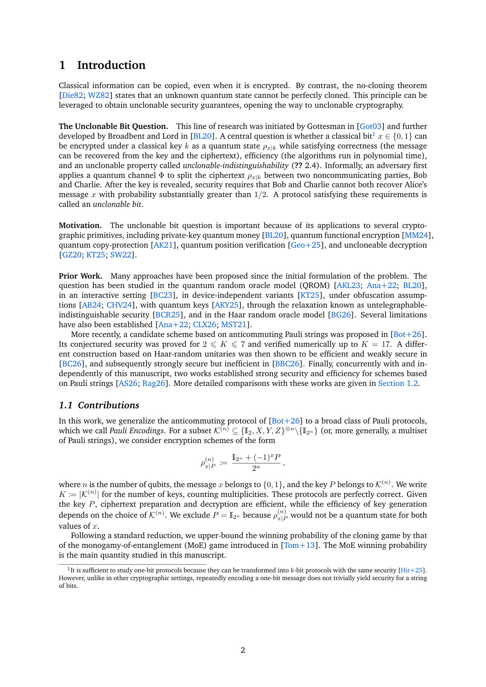
<figcaption class="paper-figure-caption"><b>Fig 1.</b> Low-resolution page preview, page 2</figcaption>
</figure>
<figure class="paper-figure-card">
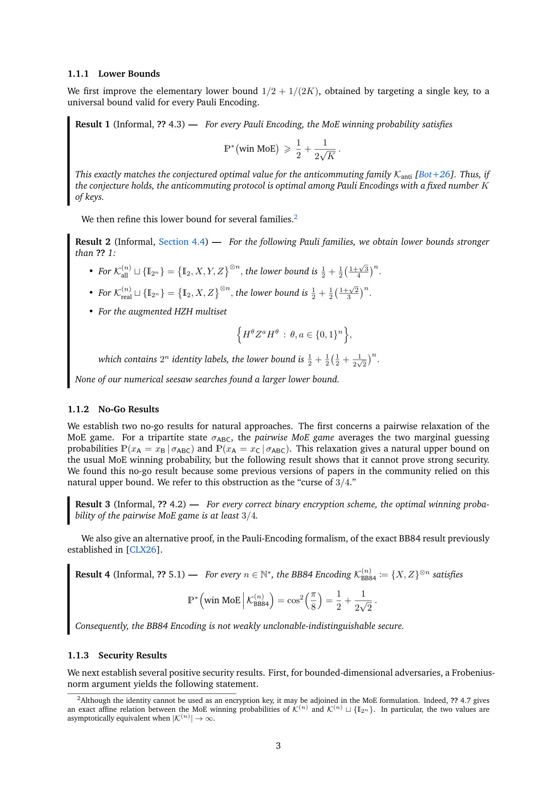
<figcaption class="paper-figure-caption"><b>Fig 2.</b> Low-resolution page preview, page 3</figcaption>
</figure>
<figure class="paper-figure-card">
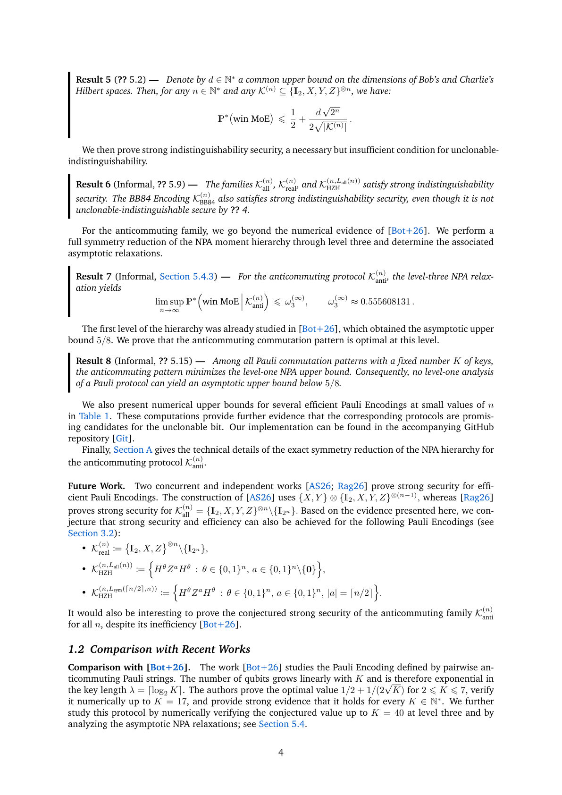
<figcaption class="paper-figure-caption"><b>Fig 3.</b> Low-resolution page preview, page 4</figcaption>
</figure>
<figure class="paper-figure-card">
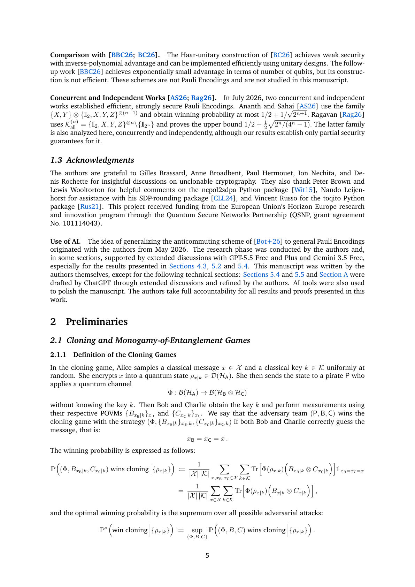
<figcaption class="paper-figure-caption"><b>Fig 4.</b> Low-resolution page preview, page 5</figcaption>
</figure>
<figure class="paper-figure-card">
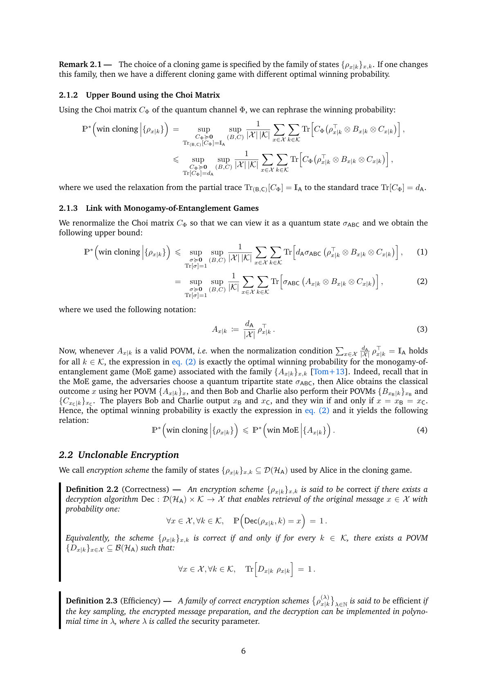
<figcaption class="paper-figure-caption"><b>Fig 5.</b> Low-resolution page preview, page 6</figcaption>
</figure>
</div>

<p><strong>Summary.</strong> This paper analyzes the security of Pauli Encoding schemes designed for unclonable encryption by studying the associated cloning game. Using advanced mathematical tools like moment matrix hierarchies and representation theory, the authors derive tight lower and upper bounds on the adversary's winning probability. The work provides strong theoretical constraints on what quantum cryptography can achieve in preventing state cloning.</p>
<p><strong>Why it may be interesting.</strong> The rigorous application of representation theory (symmetric group characters, Specht modules) to bound quantum information security parameters is highly relevant for theoretical physicists working on fundamental limits in quantum communication.</p>
<details>
<summary>Detailed structure</summary>
<p><strong>Main problem.</strong> The paper investigates the security of quantum encryption schemes against an adversary attempting to clone or distinguish encrypted states, addressing the Unclonable Bit Question.</p>
<p><strong>Main result.</strong> It establishes universal lower bounds on the winning probability for Pauli Encodings and derives strong upper bounds (e.g., $\le 0.5556$) using advanced SDP relaxations for specific families of encodings.</p>
<p><strong>Method.</strong> The authors employ techniques from quantum information theory, including analyzing the monogamy-of-entanglement game and utilizing moment matrix hierarchies (NPA) combined with representation theory to derive rigorous bounds.</p>
<p><strong>Model / system.</strong> The core model is Pauli Encodings, where ciphertexts are normalized eigenspace projectors of Pauli strings acting on a quantum system. The analysis involves studying the security against adversaries in cloning games.</p>
<p><strong>Key observables.</strong> Monogamy-of-Entanglement (MoE) winning probability ($P_{	ext{win MoE}}$), optimal cloning probability ($P^*_{	ext{win cloning}}$), and derived block matrices $B(K)_{\lambda,\epsilon}(g)$.</p>
<p><strong>Important parameters / regimes.</strong> The number of Pauli strings ($K$), the system dimension ($2^n$), and the level of the moment relaxation (e.g., Level One, Two, Three).</p>
<p><strong>Assumptions / limitations.</strong> The analysis relies on establishing equivalences between positive semidefiniteness of moment matrices and derived block matrices, and assumes certain structures for Pauli string families.</p>
<p><strong>Figures summary.</strong> Not specified in the notes; the structure suggests mathematical derivations leading to explicit SDPs at various levels.</p>
<p><strong>Paper structure.</strong> The paper progresses from defining the security problem (Unclonable Bit Question) using Pauli Encodings, deriving general lower bounds, establishing no-go results via pairwise marginals, and finally applying advanced moment/representation theory techniques (NPA hierarchy) to derive tight upper bounds.</p>
</details>
<details>
<summary>Abstract</summary>
<p>The unclonable bit question asks whether quantum encryption can prevent an adversary from producing two systems that both reveal the plaintext once the key is disclosed. We introduce and study Pauli Encodings, a simple class of one-bit encryption schemes whose ciphertexts are normalized eigenspace projectors of Pauli strings. For every Pauli Encoding with K Pauli strings, we prove a universal lower bound $1/2+1/(2\sqrt{K})$ on the optimal monogamy-of-entanglement winning probability, together with sharper bounds for several structured families. We then establish two limitations of natural approaches to unclonable security. First, if the Pauli strings are restricted to strings of X and Z of length n, the encoding is not secure. Second, we identify a universal 3/4 obstruction showing that arguments based only on pairwise guessing marginals cannot establish unclonable-indistinguishable security. When the Pauli strings all pairwise anticommute, the protocol becomes the one studied in [Quantum 10, 2157 (2026)]. We exploit the symmetry of this protocol to solve the third level of the natural semidefinite programming relaxation obtaining an asymptotic upper bound of approximately 0.5556 on the winning probability. Finally, we prove strong unclonable-indistinguishable security against bounded-local-dimension adversaries and strong indistinguishability security for several efficient Pauli families. First-level NPA computations provide additional numerical evidence towards the strong unclonable-indistinguishable security.</p>
</details>
<p><sub><a href="#top">↑ back to top</a></sub></p>

<p><a id="paper-2607.27525"></a></p>
<h3 id="design-principles-for-energy-dissipation-in-viscoelastic-network-metamaterials"><a href="http://arxiv.org/abs/2607.27525v1">Design principles for energy dissipation in viscoelastic network metamaterials</a></h3>
<p><strong>Authors:</strong> Niranjan Sarpangala, Sean Fancher, Prashant K. Purohit, Eleni Katifori<br>
<strong>Type:</strong> theory · <strong>Category:</strong> disordered systems and neural networks · <strong>PDF:</strong> <a href="https://arxiv.org/pdf/2607.27525v1">https://arxiv.org/pdf/2607.27525v1</a><br>
<strong>Analysis basis:</strong> full PDF text, analyzed in chunks
<strong>Topic relevance:</strong> <code>correlated / nonlocal dissipation</code> <strong>2/5</strong> · <code>driven-dissipative phase transition</code> <strong>2/5</strong> · <code>methods for driven-dissipative</code> <strong>2/5</strong> · <code>Frenkel-Kontorova</code> <strong>1/5</strong> · <code>Keldysh / 2PI / non-Gaussian methods</code> <strong>1/5</strong> · <code>Kondo &amp; dissipative impurity</code> <strong>1/5</strong> · <code>analog quantum simulation</code> <strong>1/5</strong> · <code>entanglement &amp; information structure</code> <strong>1/5</strong> · <code>non-equilibrium dynamics</code> <strong>1/5</strong> · <code>non-equilibrium universality</code> <strong>1/5</strong></p>
<div class="figure-strip-hint">↔ Scroll figures horizontally</div>
<div class="paper-figures-scroll">
<figure class="paper-figure-card">
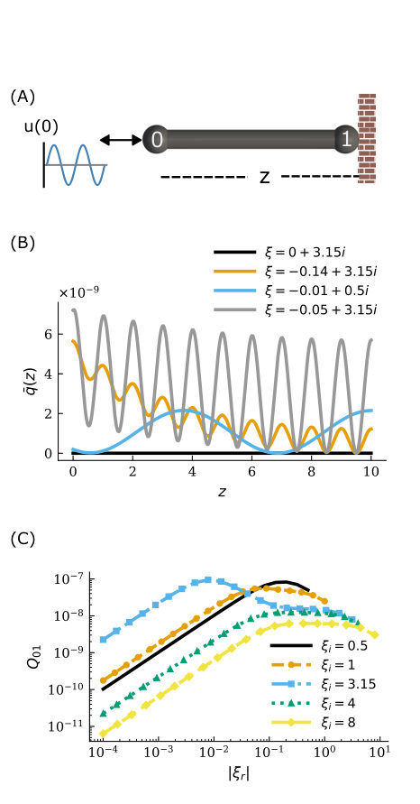
<figcaption class="paper-figure-caption"><b>Fig 1.</b> FIG. 2. Dissipation in 1D bulk material (A) A viscoelas- tic rod of length L, clamped at one end and driven harmon- ically at the other. The coordinate z denotes distance from the driven end. (B) Spatial profile of the energy dissipated per unit length per unit time, ¯q(z), for several values of the complex wavenumber ξ = ξr + iξi. (C) Total rate of energy dissipated by the rod as a function of the real part of complex wave number. L = 10, A = 0.1, ρ = 1, u(0) = 0.001 sin t.</figcaption>
</figure>
<figure class="paper-figure-card">
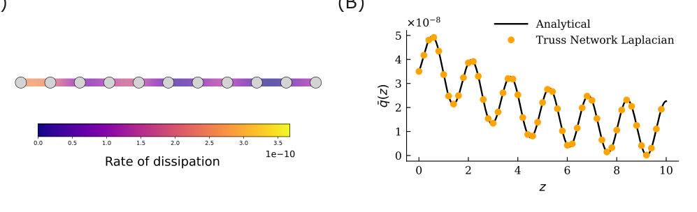
<figcaption class="paper-figure-caption"><b>Fig 2.</b> FIG. 3. Benchmarking: energy dissipation in a uniform 1D network. (A) Rate of energy dissipation per segment in a one-dimensional network of 10 rods each of equal length (L = 1) and cross sectional area (A = 1), driven harmonically at the leftmost joint and fixed at the rightmost joint. Each rod was discretized into Nseg = 500. (B) Comparison of rate of energy dissipation per unit length, ¯q(z) computed by the graph Laplacian based spectral framework against the analytical solution for a single rod, confirming exact agreement. ξ = −0.1 + 2i, ρ = 1, ω = 1, u(0, t) = 0.001 sin t, u(10, t) = 0.</figcaption>
</figure>
<figure class="paper-figure-card">
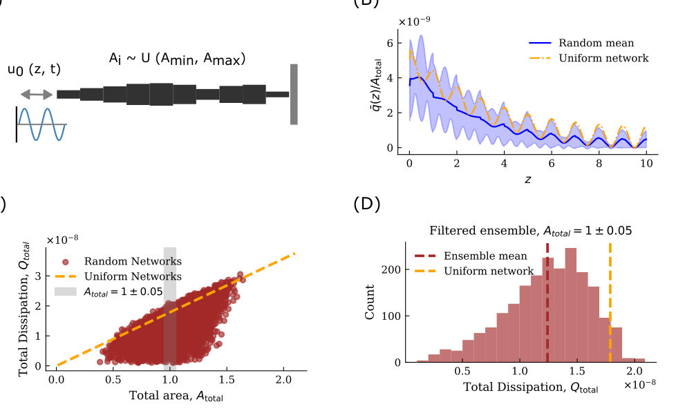
<figcaption class="paper-figure-caption"><b>Fig 3.</b> FIG. 4. Total energy dissipation in one-dimensional networks with random cross-sectional areas. (A) A one- dimensional network of 10 rods of equal length (L), with cross-sectional areas drawn independently from a uniform distribution U(Amin, Amax). The leftmost joint is driven harmonically with amplitude ˜u(0) and frequency ω as u(0, t) = ˜u(0) sin ωt and the rightmost joint is fixed. (B) Rate of energy dissipation per unit length per unit time , ¯q(z), normalized by total network area, Atotal = P</figcaption>
</figure>
<figure class="paper-figure-card">
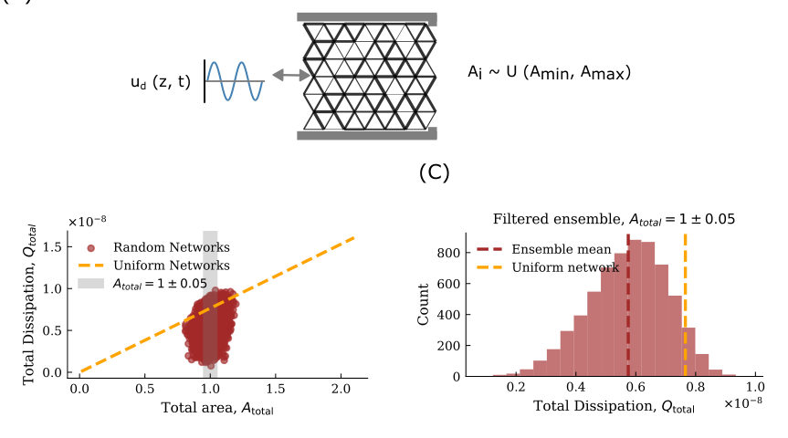
<figcaption class="paper-figure-caption"><b>Fig 4.</b> FIG. 5. Total energy dissipation in two-dimensional networks with random cross-sectional areas. (A) A two- dimensional triangular truss network with cross-sectional areas drawn independently from a uniform distribution U(Amin, Amax). All rods have equal length L = 1 and the same material properties. The arrow indicates the driven joint, excited harmonically along the x-axis with amplitude, ˜ud and frequency, ω. Roller boundary conditions applied for top and bottom surface as indicated. Rightmost top and bottom nodes are clamped. (B) Total energy dissipated (Qtotal) for random networks plotted against total network area ((Atotal). The orange line shows results for uniform networks of varying...</figcaption>
</figure>
<figure class="paper-figure-card">
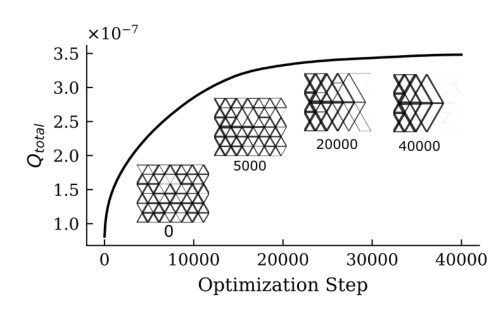
<figcaption class="paper-figure-caption"><b>Fig 5.</b> FIG. 6. Illustrative optimization trajectory for a two- dimensional viscoelastic network. Evolution of a single gradient-based optimization run maximizing the total energy dissipated under a fixed material cost constraint. The solid black line is rate of total energy dissipated by the network as a function of optimization step. Insets depict the net- work architecture at selected steps (labeled), with rod thick- ness proportional to square root of cross-sectional area (di- vided by square root of cross-sectional area of thickest rod in the network). Starting from a random initial configura- tion, the optimization monotonically increases dissipation and converges to a source-weighted, loopy...</figcaption>
</figure>
</div>

<p><strong>Summary.</strong> This work introduces a novel, computationally efficient spectral framework to model mechanical energy dissipation in large viscoelastic metamaterials. By optimizing the cross-sectional areas of the network rods, the authors demonstrate that maximum energy absorption is achieved not randomly, but through an engineered gradient structure dictated by the material's inherent attenuation length scale.</p>
<p><strong>Why it may be interesting.</strong> While focused on classical mechanics, the use of spectral methods (Laplacian) and optimization principles in complex, disordered structures shares conceptual overlap with analyzing energy flow or correlation decay in quantum many-body systems or disordered quantum media.</p>
<details>
<summary>Detailed structure</summary>
<p><strong>Main problem.</strong> The primary goal is identifying optimal architectural designs within large, disordered viscoelastic truss networks to maximize mechanical energy dissipation for applications like vibration isolation.</p>
<p><strong>Main result.</strong> Optimal architectures are not random but exhibit a gradient structure where material properties decay from the source according to the intrinsic attenuation length scale of the base material.</p>
<p><strong>Method.</strong> The authors developed an efficient graph Laplacian-based spectral framework that retains full continuum dynamics, allowing optimization via gradient descent on cross-sectional areas.</p>
<p><strong>Model / system.</strong> The system is a viscoelastic truss network modeled by interconnected rods, where each rod's dynamics are treated as a one-dimensional continuum element governed by linear viscoelasticity principles.</p>
<p><strong>Key observables.</strong> Energy dissipation rate (Q), optimal cross-sectional area distribution ($
ho_{net}(z)$), and the intrinsic attenuation length scale ($\xi$).</p>
<p><strong>Important parameters / regimes.</strong> The frequency of excitation ($\omega$), the material's intrinsic attenuation length ($\xi$), and the total available material cost/area ($ ext{A}_{total}$).</p>
<p><strong>Assumptions / limitations.</strong> The analysis assumes linear viscoelasticity governed by the Boltzmann superposition principle, and that the problem can be efficiently mapped onto a spectral framework based on the network Laplacian.</p>
<p><strong>Figures summary.</strong> Figures illustrate the comparison between energy dissipation profiles for random versus optimized cross-sections, showing the characteristic gradient decay in optimal designs. Later figures confirm the robustness of these scaling laws under geometric perturbations.</p>
<p><strong>Paper structure.</strong> The paper first establishes the spectral framework for viscoelastic networks using the graph Laplacian. It then uses optimization techniques to show that maximizing energy dissipation requires a specific, non-random distribution of cross-sectional areas governed by material attenuation lengths. Finally, it tests the robustness of these findings against geometric disorder.</p>
</details>
<details>
<summary>Abstract</summary>
<p>Mechanical energy dissipation in networked materials is relevant for applications from vibration isolation to impact protection, yet identifying optimal dissipative architectures in large disordered truss networks is computationally prohibitive with conventional finite element methods. We develop an efficient graph Laplacian-based spectral framework for viscoelastic truss networks, in which the full continuum dynamics of each rod are retained exactly and the problem size scales with the number of joints rather than element-level discretization points. Using this framework, we investigate how redistributing cross-sectional areas within a network (without changing material composition) controls energy dissipation. We find that random redistribution typically reduces dissipation relative to a uniform baseline, while gradient-based optimization yields nontrivial architectures whose form is governed by the intrinsic attenuation length of the base material. Focusing on driving frequencies near a global resonant mode of the network, we show that the optimal mass distribution decays from the source (driven joint) with the attenuation length scale, and at small attenuation lengths the optimal architecture is independent of the boundary conditions. These results motivate future studies of dissipation length scale based design principles on more complex disordered architectures and provide an efficient computational framework for exploring such structures at scale.</p>
</details>
<p><sub><a href="#top">↑ back to top</a></sub></p>

<p><a id="paper-2607.27313"></a></p>
<h3 id="suppressed-quantum-effects-of-weakly-coupled-waves"><a href="http://arxiv.org/abs/2607.27313v1">Suppressed Quantum Effects of Weakly Coupled Waves</a></h3>
<p><strong>Authors:</strong> Yunjia Bao, Dhong Yeon Cheong, Nicholas L. Rodd, Joey Takach, Lian-Tao Wang, Kevin Zhou<br>
<strong>Type:</strong> theory · <strong>Category:</strong> other · <strong>PDF:</strong> <a href="https://arxiv.org/pdf/2607.27313v1">https://arxiv.org/pdf/2607.27313v1</a><br>
<strong>Analysis basis:</strong> full PDF text, analyzed in chunks
<strong>Topic relevance:</strong> <code>Tavis-Cummings &amp; cavity-many-emitter</code> <strong>2/5</strong> · <code>measurement-induced transitions</code> <strong>2/5</strong> · <code>quantum measurements</code> <strong>2/5</strong> · <code>Keldysh / 2PI / non-Gaussian methods</code> <strong>1/5</strong> · <code>correlated / nonlocal dissipation</code> <strong>1/5</strong> · <code>correlated cavity matter</code> <strong>1/5</strong> · <code>driven-dissipative phase transition</code> <strong>1/5</strong> · <code>entanglement &amp; information structure</code> <strong>1/5</strong> · <code>methods for driven-dissipative</code> <strong>1/5</strong></p>
<div class="figure-strip-hint">↔ Scroll figures horizontally</div>
<div class="paper-figures-scroll">
<figure class="paper-figure-card">
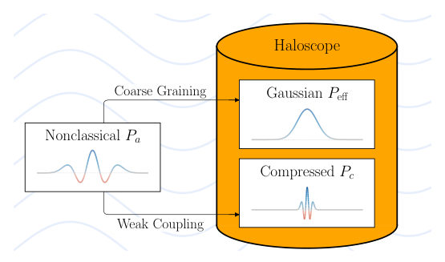
<figcaption class="paper-figure-caption"><b>Fig 1.</b> Figure 1. Two obstructions to observing intrinsically nonclassical effects from weakly coupled waves, such as axion dark matter. Even if the axion state Pa is nonclassical, the haloscope only couples to a coarse-grained effective mode Peff, which is often in a thermal Gaussian state, erasing nonclassical effects. Weak coupling maps the axion state onto the cavity Pc in a compressed form with finely spaced sign oscillations, suppressing the magnitude of observable nonclassical effects. These issues are neither caused nor avoided by high mode occupancy.</figcaption>
</figure>
<figure class="paper-figure-card">
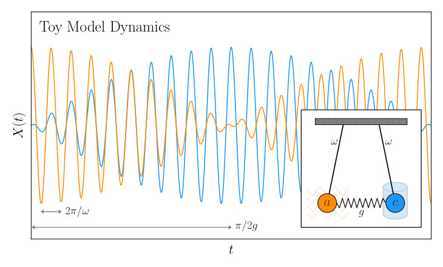
<figcaption class="paper-figure-caption"><b>Fig 2.</b> Figure 2. The dynamics of the toy model in Eq. (1.1), which describes the evolution of two weakly coupled oscillators of angular frequency ω ≃ma. We show throughout this work that this model can be an accurate effective description of certain axion DM detection strategies. The plot takes g/ω = 1/40, whereas for DM the coupling is much weaker; ADMX targets axions with g/ω ∼gaγγB0/ω ∼10−16.</figcaption>
</figure>
<figure class="paper-figure-card">
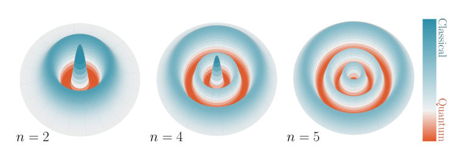
<figcaption class="paper-figure-caption"><b>Fig 3.</b> Figure 3. P-functions for nonclassical DM states, constructed by adding n axions to the Gaussian state of Eq. (2.18) with mean occupancy |α0|2 = 1.2. Note the rapid sign oscillations for higher n. Negative regions shown in red yield effects that cannot be reproduced with a classical axion model.</figcaption>
</figure>
<figure class="paper-figure-card">
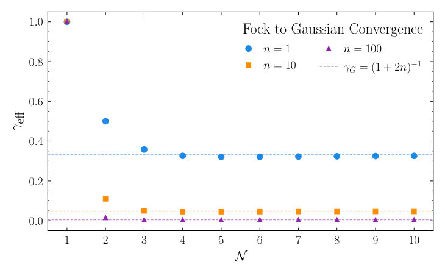
<figcaption class="paper-figure-caption"><b>Fig 4.</b> Figure 4. The purity γeff of a mode that coarse grains N identical and independent Fock states, with occupancy n = 1, 10, and 100. Convergence to the purity γG = (1 + 2n)−1 of the Gaussian state predicted by the CLT is rapid, whether n is large or order-one.</figcaption>
</figure>
<figure class="paper-figure-card">
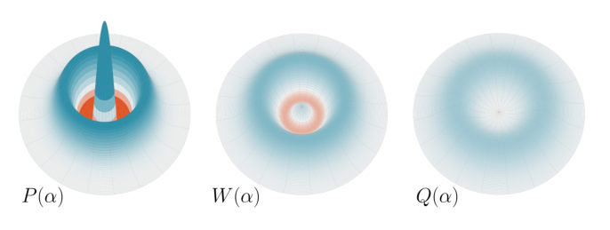
<figcaption class="paper-figure-caption"><b>Fig 5.</b> Figure 5. Quasiprobability distributions for the state obtained by adding two photons to a thermal Gaussian state with mean occupancy N = 1 [53]. Negative regions are shown in red. Nonclassicality always corresponds to negative P, though squeezed states achieve negative P but have nonnegative W.</figcaption>
</figure>
</div>

<p><strong>Summary.</strong> This paper proves two major obstacles to detecting nonclassical quantum effects from weakly coupled waves like axions or gravitational waves. First, realistic detectors average over fundamental modes, washing out the signal via coarse-graining. Second, the weak coupling itself suppresses these signatures by high powers of the coupling constant. The findings suggest that current experimental proposals are fundamentally limited in their ability to observe true quantum nonclassicality.</p>
<p><strong>Why it may be interesting.</strong> This work provides rigorous theoretical bounds on experimental detectability, showing that even if quantum effects exist, practical limitations (detector bandwidth/coarse-graining) and fundamental physics constraints (weak coupling) severely suppress observable signatures for ultra-light dark matter searches.</p>
<details>
<summary>Detailed structure</summary>
<p><strong>Main problem.</strong> The paper addresses the fundamental difficulty of detecting intrinsically nonclassical quantum effects from weakly coupled external waves, such as axion dark matter or gravitational radiation, using current experimental technology.</p>
<p><strong>Main result.</strong> Two independent obstructions are proven: first, detector coarse-graining erases nonclassical signatures via the Central Limit Theorem; second, weak coupling suppresses these effects by extra powers of the coupling constant. Detecting them requires quantum resources beyond current capabilities.</p>
<p><strong>Method.</strong> The authors analyze the evolution of the system's P-function using a coupled harmonic oscillator toy model and compare fully quantum treatments against classical approximations in the weak coupling limit.</p>
<p><strong>Model / system.</strong> The system involves weakly coupled waves (e.g., axions, gravitational radiation) interacting with detectors modeled as resonant microwave cavities. The dynamics are governed by an interaction Hamiltonian involving lowering operators for both fields.</p>
<p><strong>Key observables.</strong> Nonclassicality diagnostics include quadrature statistics, number statistics, entanglement measures, and Wigner function negativity.</p>
<p><strong>Important parameters / regimes.</strong> The weak coupling constant ($g$) and the small conversion efficiency ($\eta = \sin^2(gt)$) are crucial parameters determining the suppression scale.</p>
<p><strong>Assumptions / limitations.</strong> Key assumptions include the applicability of the Quantum Central Limit Theorem (CLT) for detector response and treating dissipation as negligible on relevant timescales.</p>
<p><strong>Figures summary.</strong> Figure 1 illustrates both obstructions: coarse-graining leading to an effective Gaussian state, and weak coupling suppressing nonclassical features. Figure 3 shows P-functions illustrating how negative regions are smoothed out by noise.</p>
<p><strong>Paper structure.</strong> The paper first establishes the general problem of detecting quantum effects in weakly coupled systems. It then develops a toy model Hamiltonian and analyzes the time evolution of the state's P-function, deriving explicit mathematical proofs for both the coarse-graining and weak-coupling suppression mechanisms.</p>
</details>
<details>
<summary>Abstract</summary>
<p>Precision experiments increasingly target weakly coupled waves, including axion dark matter and gravitational radiation. Such waves are commonly described as classical fields, yet they could exist in quantum states with no classical counterpart. We exhibit two severe obstructions to detecting nonclassical effects, both independent of the mode occupancy. First, realistic detectors cannot resolve the fundamental modes of a field; instead they couple to coarse-grained "effective" modes, which often washes out nonclassical effects. Second, all nonclassical effects are suppressed by extra powers of the weak coupling, making them much harder to detect than the waves themselves. We prove this in general, and explicitly show how the suppression arises for quadrature and number statistics, entanglement, and decoherence. The suppression can in principle be overcome given suitable quantum resources, such as highly squeezed detector states, but the required parameters are far beyond current experimental capabilities. We use the axion cavity haloscope as an explicit example, although our conclusions apply to many ultralight dark matter searches, and rule out proposals to establish the quantization of gravity from observations of gravitational waves.</p>
</details>
<p><sub><a href="#top">↑ back to top</a></sub></p>

<p><a id="paper-2607.28425"></a></p>
<h3 id="anomalous-metal-and-superconducting-phases-in-rhombohedral-graphene"><a href="http://arxiv.org/abs/2607.28425v1">Anomalous metal and superconducting phases in rhombohedral graphene</a></h3>
<p><strong>Authors:</strong> Anna Okounkova, Abigail Sohm, Tobias Faehndrich, Manish Kumar, Derek Waleffe, Jiaqiang Yan, Kenji Watanabe, Takashi Taniguchi, Joshua Folk, Matthew Yankowitz<br>
<strong>Type:</strong> experiment · <strong>Category:</strong> strongly correlated electrons · <strong>PDF:</strong> <a href="https://arxiv.org/pdf/2607.28425v1">https://arxiv.org/pdf/2607.28425v1</a><br>
<strong>Analysis basis:</strong> full PDF text, analyzed in chunks
<strong>Topic relevance:</strong> <code>analog quantum simulation</code> <strong>2/5</strong> · <code>driven-dissipative phase transition</code> <strong>2/5</strong> · <code>Kondo &amp; dissipative impurity</code> <strong>1/5</strong> · <code>non-equilibrium dynamics</code> <strong>1/5</strong></p>
<div class="figure-strip-hint">↔ Scroll figures horizontally</div>
<div class="paper-figures-scroll">
<figure class="paper-figure-card">
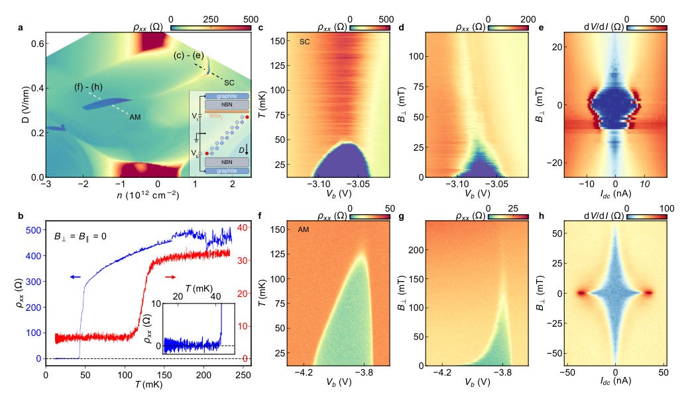
<figcaption class="paper-figure-caption"><b>Fig 1.</b> FIG. 1. Superconducting and anomalous-metal pockets in the absence of magnetic field. a, Map of the longitudinal resistivity ρxx as a function of n and D taken at base temperature and zero magnetic field. (inset) Schematic of the dual-gated eight-layer rhombohedral graphene device with a monolayer WSe2 substrate. b, Measurements of ρxx versus T. The blue curve is taken within a superconductivity pocket (n = 1.34 × 1012 cm−2 and D = 0.47 V/nm). The red curve is taken within an anomalous metal pocket (n = −1.25 × 1012 cm−2 and D = 0.33 V/nm). The inset shows a zoom-in on the low-T portion of the blue curve. c, Measurement of ρxx versus Vb and T with fixed Vt = 3.08 V, corresponding to the...</figcaption>
</figure>
<figure class="paper-figure-card">
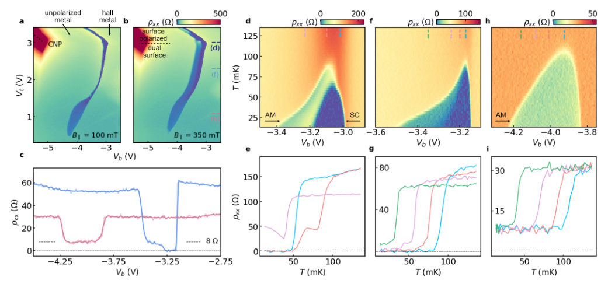
<figcaption class="paper-figure-caption"><b>Fig 2.</b> FIG. 2. Evolution with in-plane magnetic field and temperature. a, Map of ρxx at B⊥= 0, B∥= 100 mT, and base temperature. b, Same map at B∥= 350 mT. c, Line traces from (b) taken at Vt = 1.10 V (red) and 2.30 V (blue). The light traces are single measurement curves, the dark traces are averages over nine adjacent Vt centered on the nominal value. d, Measurement of ρxx versus Vb and T taken with B⊥= 0, B∥= 350 mT, and Vt = 3.00 V. e, Selected line traces of ρxx versus T from (d). f–g, Same as (d–e) with Vt = 2.30 V. h–i, Same as (d–e) with Vt = 1.10 V.</figcaption>
</figure>
<figure class="paper-figure-card">
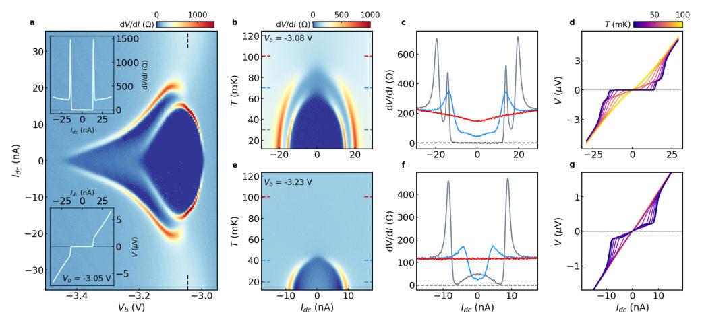
<figcaption class="paper-figure-caption"><b>Fig 3.</b> FIG. 3. Non-monotonic current dependence of the anomalous metal. a, Measurement of dV /dI versus Vb and Idc taken at Vt = 3.00 V, B⊥= 0, B∥= 350 mT, and base temperature. (top inset) Selected dV /dI trace taken at Vb = −3.05 V. (bottom inset) Integrated I −V curve from the top inset. b, Measurement of dV /dI versus Idc and T taken under the same conditions as (a) with Vb = −3.08 V. c, Traces of dV /dI versus Idc at selected T corresponding to the color-coded lines in (b). d, Integrated I −V curves from (b). e, Same as (b) with Vb = −3.23 V. f, Selected traces from (e). g, Integrated I −V curves from (e).</figcaption>
</figure>
<figure class="paper-figure-card">
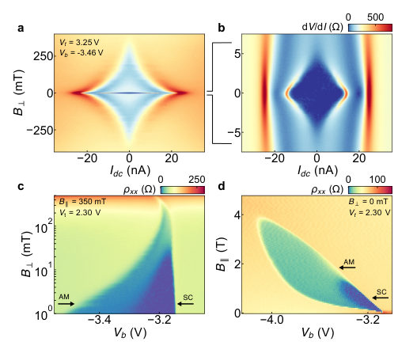
<figcaption class="paper-figure-caption"><b>Fig 4.</b> FIG. 4. Distinct magnetic field scales of the SC and AM. a, Measurement of dV /dI versus Idc and B⊥taken at B∥= 350 mT, Vb = −3.46 V, Vt = 3.25 V, and base temperature. b, Zoomed-in map from (a) over a smaller range of B⊥. c, Measurement of ρxx versus Vb and B⊥taken at B∥= 350 mT and Vt = 2.30 V. d, Measurement of ρxx versus Vb and B∥taken at B⊥= 0 and Vt = 2.30 V.</figcaption>
</figure>
</div>

<p><strong>Summary.</strong> The authors report a detailed study of superconducting and anomalous metal phases in rhombohedral graphene. They map out distinct regions exhibiting zero-resistance superconductivity alongside finite-saturation resistance AM states using transport measurements under varying magnetic fields. This work provides strong experimental constraints on the nature of these correlated electronic phases.</p>
<p><strong>Why it may be interesting.</strong> This work provides an experimental platform for studying unconventional superconductivity adjacent to exotic metallic states (AM), which often require strong electron correlations or novel pairing mechanisms beyond standard BCS theory.</p>
<details>
<summary>Detailed structure</summary>
<p><strong>Main problem.</strong> The study investigates the coexistence of zero-resistance superconducting (SC) phases alongside anomalous metal (AM) phases in rhombohedral graphene under gate tuning.</p>
<p><strong>Main result.</strong> Distinct, adjacent SC and AM pockets are observed in the phase diagram, suggesting two fundamentally different electronic states rather than a simple crossover. The large difference in critical magnetic field responses between the two regimes suggests they are not trivially related.</p>
<p><strong>Method.</strong> The research employs systematic transport measurements, including mapping resistivity ($
ho_{xx}$) vs. gate voltages and applying perpendicular ($\mathbf{B}<em _124_="|">\perp$) and parallel ($\mathbf{B}</em>$) magnetic fields to characterize phase boundaries.</p>
<p><strong>Model / system.</strong> The physical system is rhombohedral graphene grown on a WSe2 substrate, which serves as a highly tunable platform for studying correlated electronic states in 2D materials.</p>
<p><strong>Key observables.</strong> Longitudinal resistivity ($
ho_{xx}$), transverse resistance ($
ho_{xy}$), and differential conductance ($dV/dI$) are used to diagnose the SC (zero resistance) versus AM (finite saturation resistance) phases.</p>
<p><strong>Important parameters / regimes.</strong> Gate voltages ($V_b, V_t$), temperature ($T \approx 11 	ext{ mK}$), perpendicular magnetic field ($\mathbf{B}_\perp$, critical $\approx 4 	ext{ mT}$), and in-plane magnetic field ($\mathbf{B}_{\|}$, up to $3.5 	ext{ T}$).</p>
<p><strong>Assumptions / limitations.</strong> The primary assumption is that the observed phenomena are intrinsic to the material, though extrinsic origins for the AM state remain a point of debate.</p>
<p><strong>Figures summary.</strong> Figures map $
ho_{xx}$ across gate space showing isolated SC and AM pockets; they also track phase evolution with varying magnetic fields ($\mathbf{B}_{\|}$) and detail non-monotonic current dependence in the AM regime.</p>
<p><strong>Paper structure.</strong> The paper systematically maps out the phase diagram by measuring transport properties ($
ho_{xx}, 
ho_{xy}$) as a function of gate voltage and applied magnetic field, comparing the distinct phenomenology of the zero-resistance SC state against the finite-resistance AM state.</p>
</details>
<details>
<summary>Abstract</summary>
<p>Two-dimensional superconductivity is now well established in graphene-based systems, with many such realizations showing evidence for unconventional pairing. Yet in several of the gate-tuned phases that otherwise exhibit clear signatures of superconductivity, the resistance does not vanish as temperature is lowered, instead saturating at a finite value. Here we report a systematic study of this behavior in rhombohedral graphene on a WSe$_2$ substrate, finding regions of gate space with zero-resistance superconductivity alongside others with finite saturation resistance. At zero magnetic field, these regions appear as isolated pockets in gate space that otherwise exhibit strikingly similar phenomenology, including abrupt transitions to the normal state as temperature, perpendicular magnetic field, and current are raised above critical values. A small in-plane field expands and merges these pockets without qualitatively altering their behavior, producing a sharp boundary at millikelvin base temperature between states of zero or finite resistance. The finite-resistance state reproduces key phenomenology associated with the anomalous metal, a state that has been observed in thin-film superconductors for decades but lacks an accepted theoretical explanation. The tunability and reproducibility of ultra-clean rhombohedral graphene place strong constraints on extrinsic explanations and provide a new platform for understanding this behavior.</p>
</details>
<p><sub><a href="#top">↑ back to top</a></sub></p>

<p><a id="paper-2607.27876"></a></p>
<h3 id="bayesian-networks-of-density-operators"><a href="http://arxiv.org/abs/2607.27876v1">Bayesian Networks of Density Operators</a></h3>
<p><strong>Authors:</strong> Steffen Lauritzen, Piotr Zwiernik<br>
<strong>Type:</strong> theory · <strong>Category:</strong> quantum information and computing · <strong>PDF:</strong> <a href="https://arxiv.org/pdf/2607.27876v1">https://arxiv.org/pdf/2607.27876v1</a><br>
<strong>Analysis basis:</strong> full PDF text, analyzed in chunks
<strong>Topic relevance:</strong> <code>entanglement &amp; information structure</code> <strong>2/5</strong> · <code>Keldysh / 2PI / non-Gaussian methods</code> <strong>1/5</strong> · <code>correlated / nonlocal dissipation</code> <strong>1/5</strong> · <code>driven-dissipative phase transition</code> <strong>1/5</strong> · <code>methods for driven-dissipative</code> <strong>1/5</strong></p>
<div class="figure-strip-hint">↔ Scroll figures horizontally</div>
<div class="paper-figures-scroll">
<figure class="paper-figure-card">
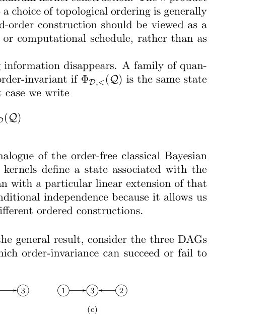
<figcaption class="paper-figure-caption"><b>Fig 1.</b> Figure 1: The fork, chain and collider. The vertex labels represent a topological ordering in each graph.</figcaption>
</figure>
</div>

<p><strong>Summary.</strong> This paper develops a theory for quantum Bayesian networks by analyzing how conditional independence structures (defined via density operators) relate to graph structure on a DAG. It distinguishes between two ways of constructing these states—intrinsic and extrinsic—and provides necessary and sufficient conditions using logarithmic identities to characterize true directed Markov states in the quantum domain.</p>
<p><strong>Why it may be interesting.</strong> This work provides a rigorous mathematical framework for applying graphical model concepts, traditionally from classical statistics, to the non-commutative setting of quantum mechanics, which is crucial for understanding quantum causality.</p>
<details>
<summary>Detailed structure</summary>
<p><strong>Main problem.</strong> The paper studies quantum analogues of Bayesian networks on a Directed Acyclic Graph (DAG), aiming to distinguish between intrinsic and extrinsic constructions for positive definite density operators.</p>
<p><strong>Main result.</strong> It proves that the intrinsic construction yields equivalent Markov properties, while the extrinsic one is highly dependent on the chosen topological ordering; furthermore, it characterizes directed quantum Markov states using logarithmic candidates.</p>
<p><strong>Method.</strong> The authors employ concepts from quantum information theory, including partial traces, Von Neumann entropy, and defining specialized logarithmic conditionals to linearize complex non-linear Markov identities.</p>
<p><strong>Model / system.</strong> The system involves quantum states represented by positive definite density operators ($
ho$) acting on finite-dimensional tensor-product Hilbert spaces, structured according to a DAG representing conditional independence relationships.</p>
<p><strong>Key observables.</strong> Density operators ($
ho$), quantum kernels ($Q_{v|  ext{pa}(v)}$), excess global information ($g_I(D)\sigma$), and the logarithmic candidate $TD(\sigma)$.</p>
<p><strong>Important parameters / regimes.</strong> The structure of the DAG (transitivity, chordality) dictates the equivalence between different Markov characterizations.</p>
<p><strong>Assumptions / limitations.</strong> The analysis relies on defining quantum conditional independence ($\perp\!\!\!Q$) via information measures and assuming the existence of positive definite density operators for factorization theorems to hold.</p>
<p><strong>Paper structure.</strong> The paper progresses from establishing definitions (e.g., quantum conditional independence using mutual information) to comparing two construction methods (intrinsic vs. extrinsic), culminating in necessary and sufficient conditions for Markov states via logarithmic identities and global information measures.</p>
</details>
<details>
<summary>Abstract</summary>
<p>We study quantum analogues of Bayesian networks on a directed acyclic graph (DAG), distinguishing two constructions for positive definite density operators on finite-dimensional tensor-product Hilbert spaces. The intrinsic construction starts from a joint state and its conditional-independence properties. The extrinsic construction assembles a state sequentially from prescribed local quantum kernels, following an ordering compatible with the arrows of the DAG. For the intrinsic construction, we prove the equivalence of the ordered, local, and global directed Markov properties, together with entropy, recursive-factorization, and logarithmic characterizations. The extrinsic construction always gives a normalized state and recovers each kernel as a conditional on all preceding systems. The same kernel, however, need not be recovered from the marginal on the vertex and its parents; a three-qubit example exhibits this obstruction. We prove that independence of the chosen topological ordering is sufficient exactly for transitive DAGs: every order-invariant kernel family then yields an intrinsically directed Markov state. Finally, we associate a logarithmic candidate with every positive definite state and DAG, prove that it is subnormalized, and show that the trace-one candidate is a directed Markov state. Both the candidate and the excess global information are invariant under DAG Markov equivalence.</p>
</details>
<p><sub><a href="#top">↑ back to top</a></sub></p>

<p><a id="paper-2607.28570"></a></p>
<h3 id="benchmarking-quantum-simulations-of-the-lipkin-meshkov-glick-model-using-large-tensor-networks"><a href="http://arxiv.org/abs/2607.28570v1">Benchmarking Quantum Simulations of the Lipkin-Meshkov-Glick Model Using Large Tensor Networks</a></h3>
<p><strong>Authors:</strong> Maggie Bao, Rushil Dandamudi, Jerimiah Wright, Joan Étude Arrow, Henry Zou, Vardaan Sahgal, Brian J. McDermott<br>
<strong>Type:</strong> both · <strong>Category:</strong> numerical methods · <strong>PDF:</strong> <a href="https://arxiv.org/pdf/2607.28570v1">https://arxiv.org/pdf/2607.28570v1</a><br>
<strong>Analysis basis:</strong> full PDF text, analyzed in chunks
<strong>Topic relevance:</strong> <code>QC/QI experiment</code> <strong>2/5</strong> · <code>analog quantum simulation</code> <strong>1/5</strong> · <code>entanglement &amp; information structure</code> <strong>1/5</strong> · <code>methods for driven-dissipative</code> <strong>1/5</strong> · <code>non-equilibrium dynamics</code> <strong>1/5</strong></p>
<div class="figure-strip-hint">↔ Scroll figures horizontally</div>
<div class="paper-figures-scroll">
<figure class="paper-figure-card">
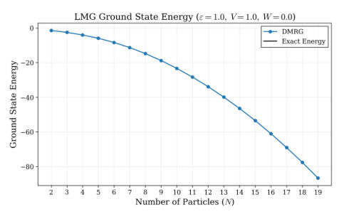
<figcaption class="paper-figure-caption"><b>Fig 1.</b> Figure 1: Comparison between DMRG-computed ground-state energies and exact numerical solutions</figcaption>
</figure>
<figure class="paper-figure-card">
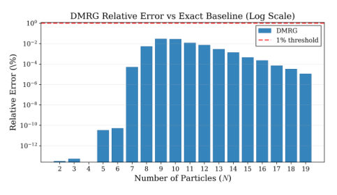
<figcaption class="paper-figure-caption"><b>Fig 2.</b> Figure 2: Relative error of DMRG against exact numer- ical solutions on a logarithmic scale.</figcaption>
</figure>
<figure class="paper-figure-card">
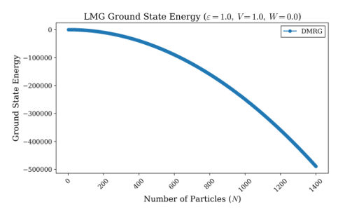
<figcaption class="paper-figure-caption"><b>Fig 3.</b> Figure 3: Ground-state energy of the LMG model com- puted using DMRG as a function of particle number N.</figcaption>
</figure>
<figure class="paper-figure-card">
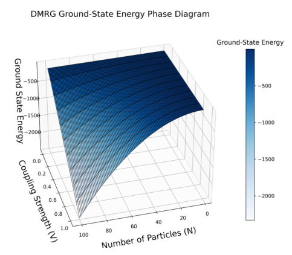
<figcaption class="paper-figure-caption"><b>Fig 4.</b> Figure 4: DMRG-computed ground-state energy phase diagram as a function of particle number N and inter- action strength V .</figcaption>
</figure>
<figure class="paper-figure-card">
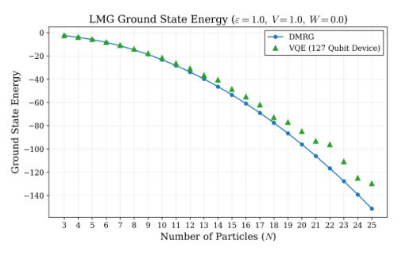
<figcaption class="paper-figure-caption"><b>Fig 5.</b> Figure 5: Iterations to convergence across four problem sizes: N = 4, 15, 18, 21.</figcaption>
</figure>
</div>

<p><strong>Summary.</strong> The paper benchmarks quantum simulation techniques (VQE, SQD) by calculating ground state energies for the LMG model, using DMRG as a high-fidelity classical reference. It demonstrates that while DMRG scales effectively to large systems, current NISQ methods face limitations in accuracy and resource scaling when compared directly.</p>
<p><strong>Why it may be interesting.</strong> This work is highly relevant because it provides quantitative metrics for comparing the scalability and noise resilience of emerging quantum algorithms against mature classical tensor network methods when simulating complex many-body Hamiltonians.</p>
<details>
<summary>Detailed structure</summary>
<p><strong>Main problem.</strong> The core problem is benchmarking the real-world performance of quantum simulation algorithms (VQE, SQD) against established classical benchmarks as quantum computing matures.</p>
<p><strong>Main result.</strong> The study demonstrates that while DMRG provides a highly accurate classical reference for large systems ($N \le 1550$), current NISQ approaches like VQE and SQD show varying levels of accuracy limited by circuit depth, noise, or computational resources.</p>
<p><strong>Method.</strong> The authors employ three distinct methods: the high-accuracy Density Matrix Renormalization Group (DMRG) for classical benchmarking; Variational Quantum Eigensolver (VQE) using parameterized quantum circuits; and Sample-Based Quantum Diagonalization (SQD).</p>
<p><strong>Model / system.</strong> The benchmark system is the Lipkin-Meshkov-Glick (LMG) model, characterized by a specific Hamiltonian involving Pauli operators. This model allows for testing across varying system sizes ($N$) and interaction strengths.</p>
<p><strong>Key observables.</strong> Ground state energies of the LMG model, relative error compared to exact solutions, convergence rates, and computational runtime scaling with bond dimension ($\chi$).</p>
<p><strong>Important parameters / regimes.</strong> System size up to $N=1550$ (DMRG); VQE is limited to the $W=0$ regime; SQD performance is constrained by available quantum shots and circuit depth.</p>
<p><strong>Assumptions / limitations.</strong> The comparison is framed within the context of Noisy Intermediate-Scale Quantum (NISQ) devices, necessitating application-centered benchmarks over pure hardware characterization. DMRG relies on MPS/MPO representations.</p>
<p><strong>Figures summary.</strong> Figures summarize DMRG's stability and scaling with bond dimension; VQE convergence shows erratic behavior at larger N; SQD analysis details gate counts and circuit depth limitations for specific state preparations.</p>
<p><strong>Paper structure.</strong> The paper establishes the LMG model as a benchmark, details the classical (DMRG) and quantum (VQE/SQD) methodologies, presents large-scale energy datasets, and concludes with a comparative analysis of resource scaling versus achievable accuracy in the NISQ era.</p>
</details>
<details>
<summary>Abstract</summary>
<p>As quantum computing matures, it is critical to benchmark its real-world problem solving performance against competitive classical methods, such as tensor networks. In this work, we leverage the Density Matrix Renormalization Group (DMRG) algorithm to compute ground state energies of the Lipkin Meshkov Glick (LMG) model as a comparative benchmark against popular noisy intermediate-scale (NISQ) algorithms like the Variational Quantum Eigensolver (VQE) and Sample-Based Quantum Diagonalization (SQD) method. By running DMRG on the NERSC Perlmutter supercomputer, we provide one of the largest LMG ground state energy datasets in literature, containing accurate ground state energies for systems up to 1400 particles. We compare these results with VQE and SQD implementations on an IBM Eagle quantum computer for comparison. VQE achieved results within 1 percent error for 6 particles, while exceeding that threshold for all other values while SQD extended that range to 17 particles, suggesting that in a noisy intermediate scale quantum era, subspace-based approaches may strike the best balance between accuracy, circuit depth, and noise resilience.</p>
</details>
<p><sub><a href="#top">↑ back to top</a></sub></p>

<p><a id="paper-2607.27470"></a></p>
<h3 id="bose-einstein-condensation-and-superfluidity-on-a-fuzzy-sphere"><a href="http://arxiv.org/abs/2607.27470v1">Bose-Einstein condensation and superfluidity on a fuzzy sphere</a></h3>
<p><strong>Authors:</strong> Vira Shyta, Flavio S. Nogueira, Ashley M. Cook<br>
<strong>Type:</strong> theory · <strong>Category:</strong> quantum gases · <strong>PDF:</strong> <a href="https://arxiv.org/pdf/2607.27470v1">https://arxiv.org/pdf/2607.27470v1</a><br>
<strong>Analysis basis:</strong> full PDF text, analyzed in chunks
<strong>Topic relevance:</strong> <code>analog quantum simulation</code> <strong>2/5</strong> · <code>Keldysh / 2PI / non-Gaussian methods</code> <strong>1/5</strong> · <code>correlated / nonlocal dissipation</code> <strong>1/5</strong> · <code>driven-dissipative phase transition</code> <strong>1/5</strong> · <code>methods for driven-dissipative</code> <strong>1/5</strong></p>
<div class="figure-strip-hint">↔ Scroll figures horizontally</div>
<div class="paper-figures-scroll">
<figure class="paper-figure-card">
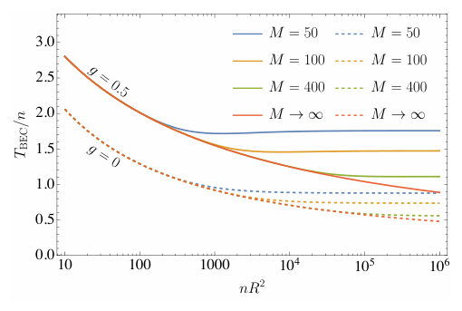
<figcaption class="paper-figure-caption"><b>Fig 1.</b> FIG. 1. Behavior of TBEC/n as a function of nR2 for different values of M. The solid lines correspond to the weakly inter- acting Bose gas (specifically, here we take g = 0.5), while the dashed lines correspond to the ideal case [see Eq. (11)]. In both cases, for a fuzzy sphere of a given radius the critical temperature TBEC grows as the non-commutativity parame- ter is increased. The influence of non-commutativity is most noticeable in the large R limit, where the calculations are most applicable.</figcaption>
</figure>
<figure class="paper-figure-card">
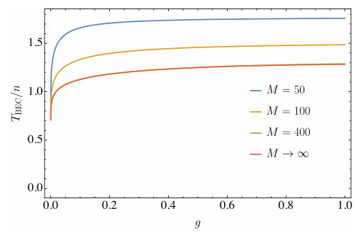
<figcaption class="paper-figure-caption"><b>Fig 2.</b> FIG. 2. Dependence of TBEC/n on the interaction coupling g for different values of M, where nR2 is set to be equal to 104. Similarly to the behavior captured in Fig. 1, the increase in the non-commutativity parameter (decrease in M) leads to higher values of TBEC. Already at M = 400, the fuzzy result has basically the same dependence on g as the commutative limit M →∞.</figcaption>
</figure>
<figure class="paper-figure-card">
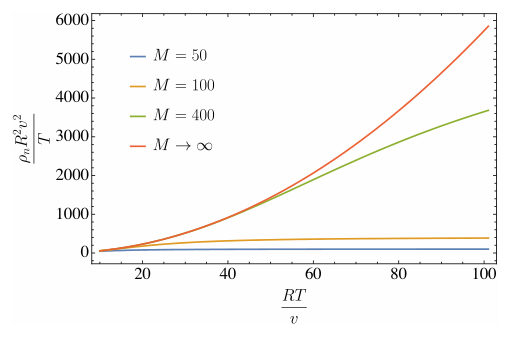
<figcaption class="paper-figure-caption"><b>Fig 3.</b> FIG. 3. The normal fluid density ρn as a function of the radius R for various values of M [see Eq. (37)]. The normal fraction decreases for higher values of the non-commutativity parameter.</figcaption>
</figure>
</div>

<p><strong>Summary.</strong> This theoretical paper examines BEC and superfluidity for Bose gases confined to a fuzzy sphere, which models non-commutative geometry. The authors show that this inherent non-commutativity stabilizes ordered phases, increasing the critical temperature compared to standard spheres. A key finding is the linear temperature dependence of the normal fluid fraction, suggesting new physical insights relevant to high-temperature superconductivity.</p>
<p><strong>Why it may be interesting.</strong> This work directly addresses fundamental quantum phenomena (BEC/superfluidity) in a geometrically modified setting (fuzzy space), providing novel predictions like the linear-T dependence of $
ho_n$ that mimic high-$T_c$ superconductor behavior.</p>
<details>
<summary>Detailed structure</summary>
<p><strong>Main problem.</strong> The study investigates Bose-Einstein condensation (BEC) and superfluidity in two dimensions confined to a non-commutative, or 'fuzzy,' sphere geometry.</p>
<p><strong>Main result.</strong> Non-commutativity enhances ordered phases, leading to a critical BEC temperature higher than on a commutative sphere. Crucially, the normal fluid fraction exhibits a linear dependence on temperature, contrasting with the usual T^3 behavior.</p>
<p><strong>Method.</strong> The analysis involves adapting quantum field theory techniques for bosons on curved spaces, promoting fields to matrices, and calculating thermodynamic quantities like superfluid density using Bogoliubov quasi-particle approaches.</p>
<p><strong>Model / system.</strong> The system is a non-relativistic Bose gas confined to a fuzzy sphere. The bosonic fields are treated as $N 	imes N$ matrices, where the matrix dimension $N$ quantifies the degree of non-commutativity ($  heta$).</p>
<p><strong>Key observables.</strong> Critical temperature for BEC ($T_c$), superfluid density ($
ho_s$), and the normal fluid fraction dependence on temperature ($
ho_n(T)$).</p>
<p><strong>Important parameters / regimes.</strong> Non-commutativity parameter (related to $N$), sphere radius ($R$), and temperature ($T$).</p>
<p><strong>Assumptions / limitations.</strong> The analysis relies on treating the fuzzy geometry as a suitable replacement for integration over the commutative sphere, and approximations are used when relating sums over angular momentum modes to integrals.</p>
<p><strong>Paper structure.</strong> The paper first establishes the physical context by contrasting 2D BEC impossibility with superfluidity. It then develops the formalism on the fuzzy sphere, analyzes BEC for ideal and weakly interacting gases, and finally investigates the superfluid response, particularly concerning vortex defects.</p>
</details>
<details>
<summary>Abstract</summary>
<p>According to Hohenberg's theorem, Bose-Einstein condensation (BEC) in two dimensions is impossible for any temperature $T>0$. By contrast, superfluidity does occur in two dimensions at finite temperatures; it emerges due to the breaking of Galilei invariance. Here we consider BEC and superfluidity on a compact two-dimensional space taking the form of a non-commutative ("fuzzy") sphere, where the scalar bosonic fields are promoted to $N\times N$ matrices. The dimension $N$ is related to the non-commutativity parameter of space and introduces an additional scale into the system. We find that non-commutativity favors ordered phases and so enhances BEC and superfluidity. We analyze BEC in ideal and weakly interacting Bose gases on a fuzzy sphere, finding in each case that the critical temperature of BEC is greater compared to that found in the case of a commutative sphere $S^2$. Then we investigate the superfluid response of weakly interacting Bose systems. To account for vortices in a superfluid, we show that, even on an ordinary sphere, the collective coordinates of vortices induce non-commutativity. With this in mind, we extend the definition of vortex defects to an inherently non-commutative sphere studied here, where the notion of a point is untenable. The non-commutativity is expected to be experimentally relevant to BEC and superfluidity since the fuzzy sphere has a thermodynamic limit distinct from the one defined over a plane, unlike the $S^2$ case. The significance of this difference is illustrated by the superfluid density calculation indicating that, in the large sphere limit, the normal fluid fraction on the fuzzy sphere yields a linear in $T$ dependence, while on a commutative $S^2$ it exhibits the usual two-dimensional $\sim T^3$ behavior. This linear dependence, arising directly from non-commutativity, is reminiscent of Uemura's law in cuprate high-$T_c$ superconductors.</p>
</details>
<p><sub><a href="#top">↑ back to top</a></sub></p>

<p><a id="paper-2607.27571"></a></p>
<h3 id="exploring-the-use-of-quantum-computing-for-facilitating-spatially-and-temporally-resolved-models-of-a-biological-cell"><a href="http://arxiv.org/abs/2607.27571v1">Exploring the use of quantum computing for facilitating spatially and temporally resolved models of a biological cell</a></h3>
<p><strong>Authors:</strong> Muralikrishnan Gopalakrishnan Meena, Dileep Kishore, Jerry M. Parks, Luke Bertels, Dilipkumar N. Asthagiri, Travis Humble, Thomas L. Beck, Mitchel J. Doktycz<br>
<strong>Type:</strong> theory · <strong>Category:</strong> other · <strong>PDF:</strong> <a href="https://arxiv.org/pdf/2607.27571v1">https://arxiv.org/pdf/2607.27571v1</a><br>
<strong>Analysis basis:</strong> full PDF text, analyzed in chunks
<strong>Topic relevance:</strong> <code>non-equilibrium dynamics</code> <strong>2/5</strong> · <code>Keldysh / 2PI / non-Gaussian methods</code> <strong>1/5</strong> · <code>analog quantum simulation</code> <strong>1/5</strong> · <code>driven-dissipative phase transition</code> <strong>1/5</strong> · <code>methods for driven-dissipative</code> <strong>1/5</strong></p>
<div class="figure-strip-hint">↔ Scroll figures horizontally</div>
<div class="paper-figures-scroll">
<figure class="paper-figure-card">
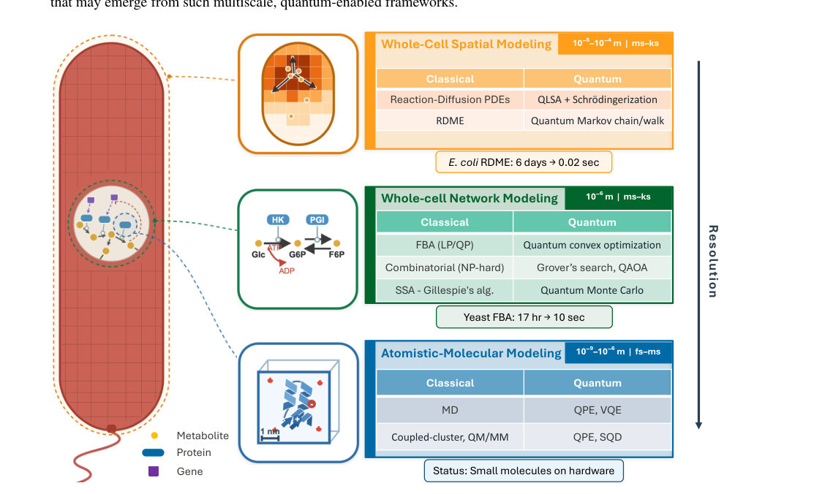
<figcaption class="paper-figure-caption"><b>Fig 1.</b> Figure 1: Classical and quantum computational methods across scales of whole-cell modeling. A bacterial cell, shown as an intracellular network of metabolites, proteins, and genes, is resolved at three successively finer scales (arrow, increasing spatial resolution), with color-matched lenses linking each regime to the cellular feature it captures: the whole cell (spatial; orange), a subnetwork (network; green), and a single macromolecule (atomistic–molecular; blue). For each regime, the table compares classical methods with their emerging quantum counterparts, listing the relevant length and time scales and an illustrative reported speed-up. Icons depict a representative system at each...</figcaption>
</figure>
<figure class="paper-figure-card">
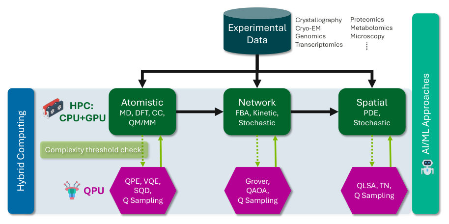
<figcaption class="paper-figure-caption"><b>Fig 2.</b> Figure 2: Depiction of a hybrid HPC-Quantum-AI integration framework to enhance various hierarchical components of whole-cell modeling. AI/ML approaches can span across the whole modeling paradigm, from experimental data to surrogate modeling and AI for quantum algorithms and computing. The · · · arrows to the QPUs denote the check for complexity threshold to offload certain kernels from the HPC solvers to the QPU.</figcaption>
</figure>
</div>

<p><strong>Summary.</strong> This paper explores using quantum computing to overcome the intractable computational barriers of whole-cell simulations. It analyzes how quantum algorithms can accelerate modeling across molecular dynamics, metabolic networks, and spatial reaction-diffusion processes. The work provides a roadmap detailing where quantum advantage is theoretically achievable for simulating life at its most complex scales.</p>
<p><strong>Why it may be interesting.</strong> It bridges fundamental quantum computation concepts (e.g., solving linear systems via QLSA) directly to complex, non-equilibrium biological processes, suggesting novel computational pathways for simulating open quantum/many-body systems in biology.</p>
<details>
<summary>Detailed structure</summary>
<p><strong>Main problem.</strong> The central challenge is developing computationally tractable whole-cell simulations that integrate molecular, metabolic, and spatial dynamics across vast scales (nm to $\mu$m, fs to hours).</p>
<p><strong>Main result.</strong> Quantum computing offers a potential path to accelerate these multi-scale biological simulations by providing theoretical speedups over classical methods for solving underlying linear systems and sampling rare events.</p>
<p><strong>Method.</strong> The paper systematically compares quantum algorithms (like VQE, QAOA, QLSA) against established classical techniques (MD, FBA, PDE solvers) across three hierarchical scales of biological modeling.</p>
<p><strong>Model / system.</strong> The system is a living cell containing trillions of interacting components. Modeling spans from atomistic electronic structure calculations to whole-cell reaction-diffusion master equations.</p>
<p><strong>Key observables.</strong> Computational time required for simulating entire cell cycles (e.g., E. coli, Yeast), molecular energies, and free energy changes ($\Delta F$).</p>
<p><strong>Important parameters / regimes.</strong> Spatial scales ($   ext{nm}$ to $\mu	ext{m}$), temporal scales ($    ext{fs}$ to hours), system size ($N$), and required accuracy ($\epsilon$, $\delta$).</p>
<p><strong>Assumptions / limitations.</strong> The feasibility relies on achieving fault-tolerant quantum architectures, and practical bottlenecks include data encoding overhead and hybrid integration strategies.</p>
<p><strong>Figures summary.</strong> Figures compare computational time for whole-cell simulations (E. coli/Yeast) using classical vs. quantum solvers; tables detail algorithm comparisons across atomistic, network, and cell scales.</p>
<p><strong>Paper structure.</strong> The paper is structured as a perspective examining the potential of quantum computing across three hierarchical modeling scales: atomistic-molecular, metabolic networks, and whole-cell spatial dynamics, providing complexity analyses for each.</p>
</details>
<details>
<summary>Abstract</summary>
<p>Whole-cell simulation, modeling all of a cell's functional systems over its life cycle, is an outstanding challenge in computational biology. Even the simplest living cell contains thousands of interacting proteins and metabolites (on the order of trillions of atoms) whose full functional dynamics spans roughly five orders of magnitude in space (nm to $μ$m) and nearly nineteen in time (fs to hours). Further, many of the governing physical and chemical properties remain incompletely characterized. Simulating such complex systems at fully atomistic resolution over a full cell cycle is computationally intractable on classical architectures, raising a central question: Can quantum computing offer a viable path to whole-cell simulations that integrate molecular- and systems-level complexity? This Perspective examines the potential of quantum computing across three hierarchical scales: atomistic-molecular modeling, metabolic and regulatory networks, and whole-cell spatial modeling. We present a complexity analysis comparing classical and quantum algorithms for representative biological problems, identifying regimes of substantial theoretical speedup under specified algorithmic assumptions. We highlight algorithmic developments designed to leverage both near-term exploratory and fault-tolerant quantum architectures, and discuss practical bottlenecks: data encoding overhead, system conditioning, measurement constraints, and hybrid quantum-HPC integration. Together, these results outline a roadmap for quantum-accelerated whole-cell modeling and the biological insights such multiscale frameworks may eventually enable.</p>
</details>
<p><sub><a href="#top">↑ back to top</a></sub></p>

<p><a id="paper-2607.27340"></a></p>
<h3 id="from-pink-to-brown-interaction-driven-noise-color-shift-in-the-aubry-andre-model"><a href="http://arxiv.org/abs/2607.27340v1">From pink to brown: Interaction-driven noise color shift in the Aubry-Andr{é} Model</a></h3>
<p><strong>Authors:</strong> M. Jiménez-Valdez, S. A. Montes-Camacho, E. J. Torres-Herrera<br>
<strong>Type:</strong> theory · <strong>Category:</strong> statistical mechanics · <strong>PDF:</strong> <a href="https://arxiv.org/pdf/2607.27340v1">https://arxiv.org/pdf/2607.27340v1</a><br>
<strong>Analysis basis:</strong> full PDF text, analyzed in chunks
<strong>Topic relevance:</strong> <code>analog quantum simulation</code> <strong>2/5</strong> · <code>driven-dissipative phase transition</code> <strong>2/5</strong> · <code>Frenkel-Kontorova</code> <strong>1/5</strong> · <code>methods for driven-dissipative</code> <strong>1/5</strong></p>
<div class="figure-strip-hint">↔ Scroll figures horizontally</div>
<div class="paper-figures-scroll">
<figure class="paper-figure-card">
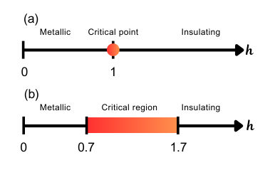
<figcaption class="paper-figure-caption"><b>Fig 1.</b> FIG. 1. Illustrative scheme of the metal-insulator transition in both models, non-interacting (a) with a single critical point and interacting (b) with a critical region.</figcaption>
</figure>
<figure class="paper-figure-card">
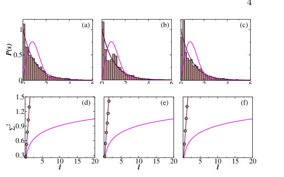
<figcaption class="paper-figure-caption"><b>Fig 2.</b> FIG. 3. Distribution of consecutive level spacings (top) and level number variance (bottom) for the non-interacting AA model. Pink solid curves show the Wigner surmise (top) and Σ2 (bottom) for GOE; brown curves indicate Poisson statis- tics. Histograms (top) and points (bottom) correspond to numerical results for h = 0.2 (a,d), h = 1.0 (b,e) and h = 3.0 (c,f).</figcaption>
</figure>
<figure class="paper-figure-card">
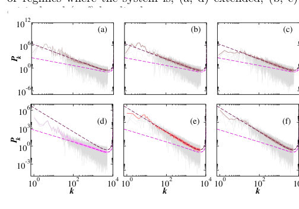
<figcaption class="paper-figure-caption"><b>Fig 3.</b> FIG. 2. Power-spectrum for the non-interacting (top) and interacting (bottom) AA model. (a) h = 0.2, (b) h = 1.0, (c) h = 3.0, (d) h = 0.2, (e) h = 1.2, (f) h = 3.0. Pink dashed curves are given by Eq. (7), while brown dashed curves by Eq. (6). Gray curves show individual samples and solid curves are averages over 103 samples.</figcaption>
</figure>
<figure class="paper-figure-card">
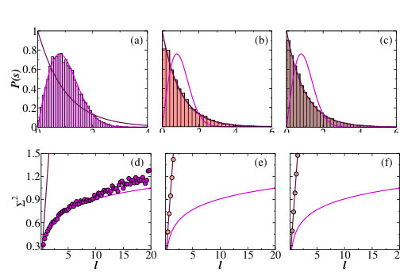
<figcaption class="paper-figure-caption"><b>Fig 4.</b> FIG. 4. Distribution of consecutive level spacings (top) and level number variance (bottom) for the interacting AA model. Pink solid curves show Wigner’s surmise (top) and Σ2 (bot- tom) for GOE; brown curves indicate Poisson statistics. His- tograms (top) and points (bottom) correspond to numerical results for h = 0.2 (a,d), h = 1.2 (b,e) and h = 3.0 (c,f).</figcaption>
</figure>
<figure class="paper-figure-card">
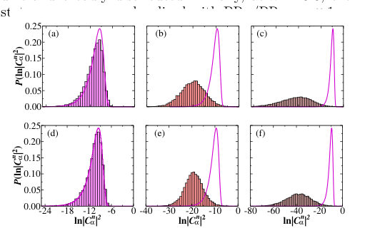
<figcaption class="paper-figure-caption"><b>Fig 5.</b> FIG. 6. Distribution of ln |Cn α|2 for an energy eigenstate with Eα ≈0 of the non-interacting (top) and interacting (bottom) AA models. Solid curves correspond to the Porter-Thomas distribution [Eq. (15)]. Histograms are for (a) h = 0.2, (b) h = 1.0, (c) h = 3.0, (d) h = 0.2, (e) h = 1.2 and (f) h = 3.0.</figcaption>
</figure>
</div>

<p><strong>Summary.</strong> This work investigates the metal-insulator transition in an interacting spin model on a quasiperiodically modulated lattice. By analyzing the power spectrum of energy level fluctuations, the authors demonstrate that interactions induce a distinct spectral signature: pink noise characterizes the metallic phase, while brown noise marks the insulating phase. This confirms the utility of advanced spectral diagnostics beyond standard measures.</p>
<p><strong>Why it may be interesting.</strong> The use of noise color analysis (pink vs. brown noise) provides a powerful, quantitative signature for distinguishing between metallic/extended and insulating/localized phases in 1D quantum systems, which is relevant to understanding transport in disordered or quasiperiodic media.</p>
<details>
<summary>Detailed structure</summary>
<p><strong>Main problem.</strong> The study revisits the metal-insulator transition in a one-dimensional lattice subjected to an on-site quasiperiodic potential.</p>
<p><strong>Main result.</strong> Introducing nearest-neighbor interactions causes the power spectrum of energy level fluctuations to shift from brown noise (insulating) to pink noise (metallic), providing a clear diagnostic tool for the transition.</p>
<p><strong>Method.</strong> The analysis utilizes spectral diagnostics, specifically examining the power-spectrum ($P_k$) of consecutive energy level spacings ($\delta_n$), alongside level spacing distributions and level number variance.</p>
<p><strong>Model / system.</strong> The system is modeled using spin-1/2 particles on a 1D lattice with an on-site quasiperiodic potential, described by a Hamiltonian involving nearest-neighbor interactions. The Aubry-André model serves as the primary framework.</p>
<p><strong>Key observables.</strong> Power-spectrum ($P_k$), level spacing distribution ($P(s)$), and level number variance ($\Sigma^2(\ell)$).</p>
<p><strong>Important parameters / regimes.</strong> Potential strength parameter $h$, interaction strength (tunable nearest-neighbor interactions), and the quasiperiodic potential parameter $eta$ (inverse golden mean).</p>
<p><strong>Assumptions / limitations.</strong> The analysis focuses on the symmetry sector with $S_z = 0$. The power-spectrum approach is emphasized for its ability to distinguish phases where standard indicators might fail.</p>
<p><strong>Figures summary.</strong> Figures illustrate the metal-insulator transition scheme, comparing non-interacting vs. interacting cases; they also show level spacing distributions and participation ratios across different potential strengths ($h$).</p>
<p><strong>Paper structure.</strong> The paper systematically analyzes spectral fluctuations using multiple diagnostics (power spectrum, level statistics) to characterize the phase transition in both non-interacting and interacting regimes of the AA model.</p>
</details>
<details>
<summary>Abstract</summary>
<p>We revisit the metal-insulator transition in a one-dimensional lattice subjected to an on-site quasiperiodic potential, modeled using spin-1/2 particles with tunable nearest-neighbor interactions. To characterize the transition, we examine the power-spectrum, defined as the squared modulus of the Fourier transform of consecutive level spacings. In the absence of interactions, the power-spectrum fails to capture clear signatures of the transition, consistently exhibiting brown-noise-like behavior across regimes. In contrast, the interacting case reveals a marked change: the metallic phase displays spectral fluctuations consistent with pink noise, while the insulating phase is characterized by brown noise. These results are supported by analyses of the level spacing distribution and the level number variance. Additionally, we demonstrate that both statistics and the structure of energy eigenstates provide reliable indicators of the transition, in both interacting and non-interacting scenarios.</p>
</details>
<p><sub><a href="#top">↑ back to top</a></sub></p>

<p><a id="paper-2607.28345"></a></p>
<h3 id="the-cycle-c9-does-not-admit-uniform-mixing"><a href="http://arxiv.org/abs/2607.28345v1">The cycle C9 does not admit uniform mixing</a></h3>
<p><strong>Authors:</strong> Alison Gray, Pransu Patel, Isaiah Young<br>
<strong>Type:</strong> theory · <strong>Category:</strong> other · <strong>PDF:</strong> <a href="https://arxiv.org/pdf/2607.28345v1">https://arxiv.org/pdf/2607.28345v1</a><br>
<strong>Analysis basis:</strong> full PDF text, analyzed in chunks
<strong>Topic relevance:</strong> <code>non-equilibrium dynamics</code> <strong>2/5</strong> · <code>Keldysh / 2PI / non-Gaussian methods</code> <strong>1/5</strong> · <code>analog quantum simulation</code> <strong>1/5</strong> · <code>driven-dissipative phase transition</code> <strong>1/5</strong> · <code>methods for driven-dissipative</code> <strong>1/5</strong></p>
<div class="figure-strip-hint">↔ Scroll figures horizontally</div>
<div class="paper-figures-scroll">
<figure class="paper-figure-card">
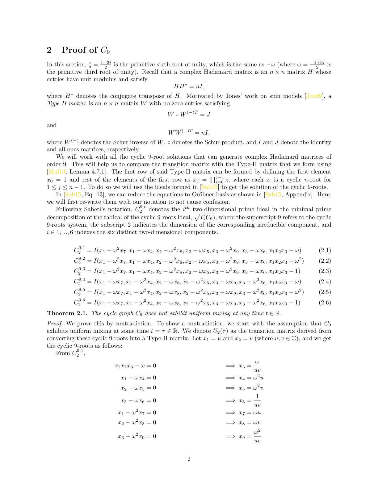
<figcaption class="paper-figure-caption"><b>Fig 1.</b> Low-resolution page preview, page 2</figcaption>
</figure>
<figure class="paper-figure-card">
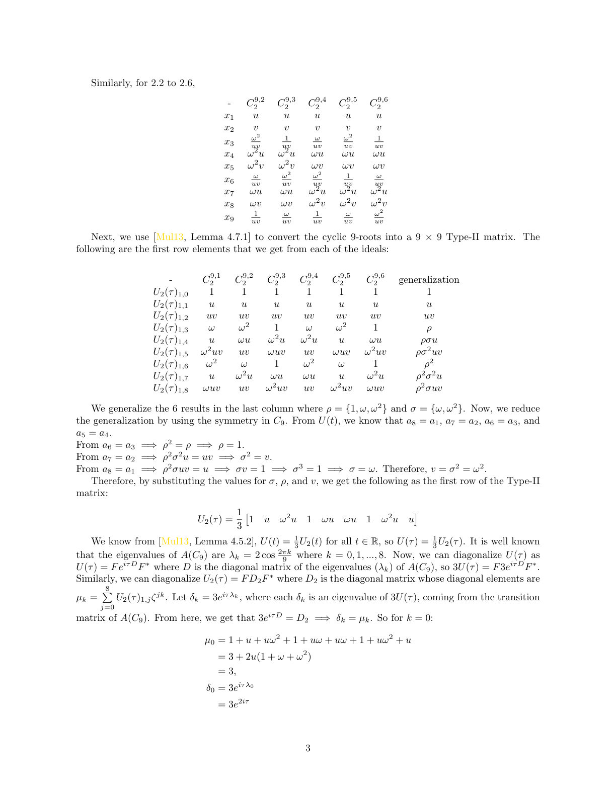
<figcaption class="paper-figure-caption"><b>Fig 2.</b> Low-resolution page preview, page 3</figcaption>
</figure>
<figure class="paper-figure-card">
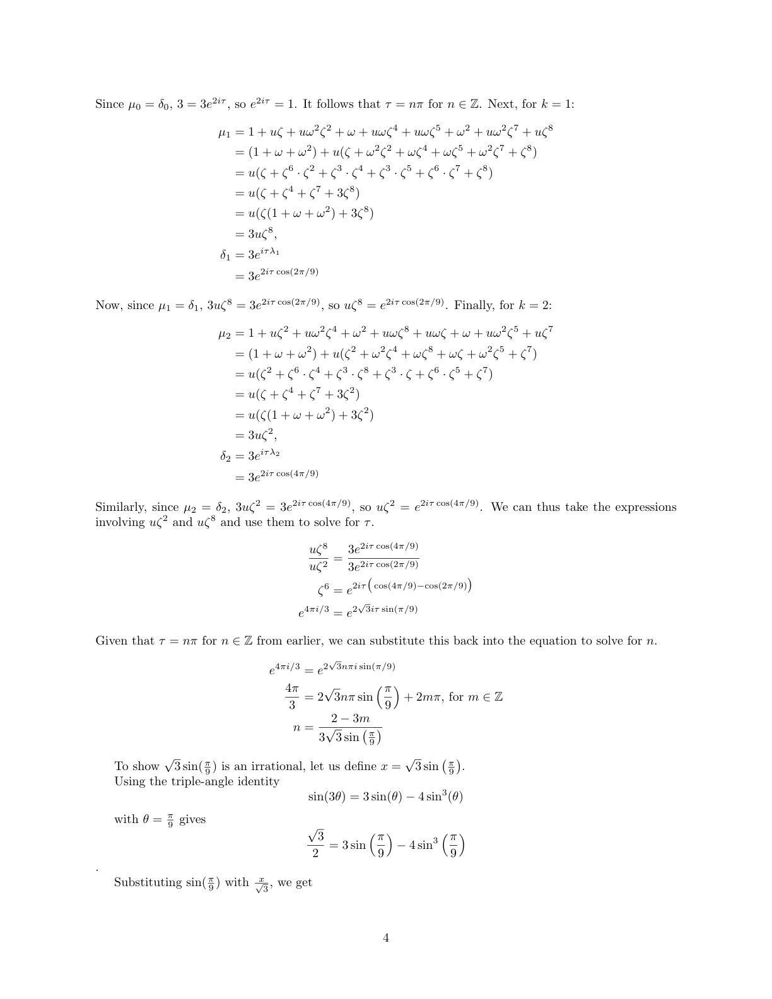
<figcaption class="paper-figure-caption"><b>Fig 3.</b> Low-resolution page preview, page 4</figcaption>
</figure>
<figure class="paper-figure-card">
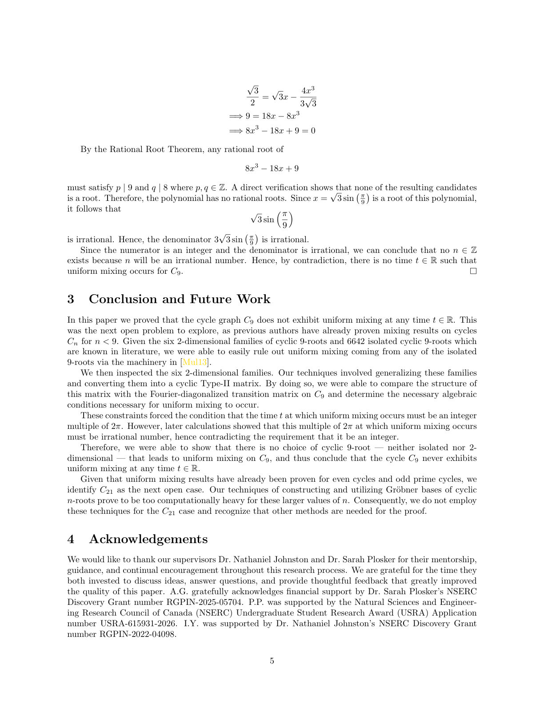
<figcaption class="paper-figure-caption"><b>Fig 4.</b> Low-resolution page preview, page 5</figcaption>
</figure>
<figure class="paper-figure-card">
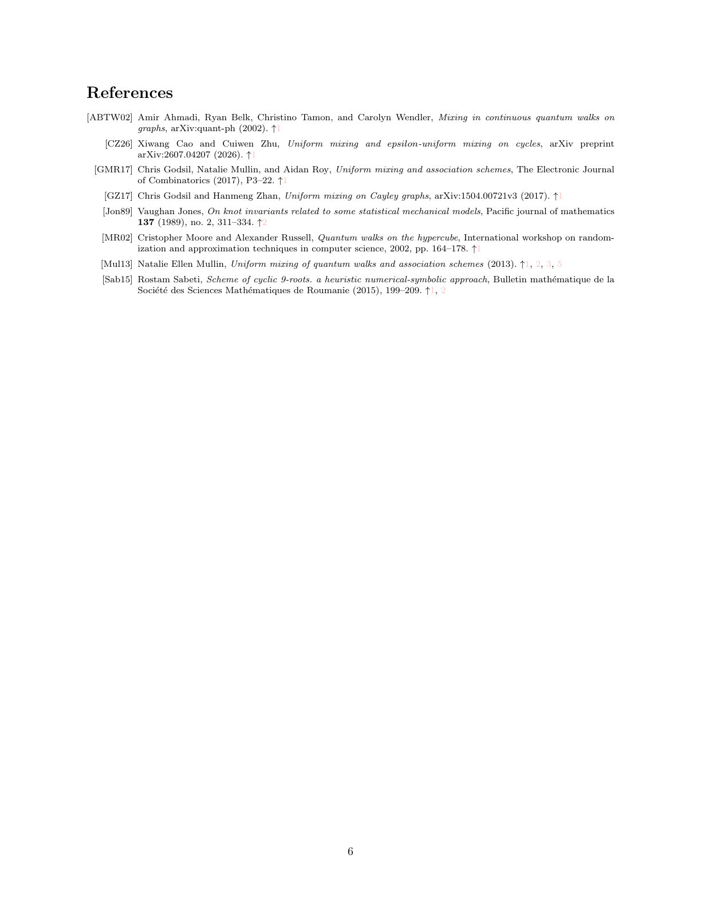
<figcaption class="paper-figure-caption"><b>Fig 5.</b> Low-resolution page preview, page 6</figcaption>
</figure>
</div>

<p><strong>Summary.</strong> This paper rigorously proves that continuous-time quantum walks on the cycle graph $C_9$ never reach a state of uniform mixing at any time. The proof relies on sophisticated algebraic geometry techniques applied to the system's evolution operator, demonstrating an inherent mathematical impossibility for such mixing to occur.</p>
<p><strong>Why it may be interesting.</strong> This work provides a rigorous mathematical framework for analyzing quantum transport phenomena on lattices, which is highly relevant to understanding decoherence and mixing in open quantum systems.</p>
<details>
<summary>Detailed structure</summary>
<p><strong>Main problem.</strong> The study aims to prove mathematically whether the cycle graph $C_9$ admits uniform mixing for continuous-time quantum walks (CTQWs) at any time $t$.</p>
<p><strong>Main result.</strong> The authors prove, using algebraic techniques, that the cycle $C_9$ never exhibits uniform mixing for CTQWs because the necessary conditions lead to contradictions regarding the nature of the required time parameter.</p>
<p><strong>Method.</strong> The analysis employs advanced mathematical tools including algebraic geometry and Gröbner basis techniques applied to cyclic roots, comparing derived matrix structures with the system's transition matrix.</p>
<p><strong>Model / system.</strong> The physical model is a continuous-time quantum walk (CTQW) evolving on the cycle graph $C_9$. Uniform mixing requires that all entries of the time evolution operator $U(t)$ have a squared magnitude of $1/n$ at time $t$.</p>
<p><strong>Key observables.</strong> The primary observable is the transition matrix $U(t) = e^{itA(G)}$, and the diagnostic is whether its elements achieve uniform magnitude ($1/n$).</p>
<p><strong>Important parameters / regimes.</strong> The cycle size $n=9$, and the time parameter $t$ (or related parameters $ au$).</p>
<p><strong>Assumptions / limitations.</strong> The analysis assumes that if uniform mixing occurs, specific algebraic relationships must hold between eigenvalues derived from the system's structure.</p>
<p><strong>Paper structure.</strong> The paper proceeds by setting up the necessary conditions for uniform mixing, converting these into algebraic constraints involving cyclic $n$-roots, and then using contradiction via Gröbner bases to rule out solutions for $C_9$.</p>
</details>
<details>
<summary>Abstract</summary>
<p>We study continuous-time quantum walks (CTQWs) on cycles. In particular, we prove that the cycle $C_9$ does not admit uniform mixing at any time via algebraic geometry and Gröbner basis techniques to rule out all cyclic 9-roots.</p>
</details>
<p><sub><a href="#top">↑ back to top</a></sub></p>

<p><a id="paper-2607.28578"></a></p>
<h3 id="on-two-differing-geometric-descriptions-of-the-passage-from-microscopy-to-macroscopy-in-markov-diffusion-theory"><a href="http://arxiv.org/abs/2607.28578v1">On two differing geometric descriptions of the passage from microscopy to macroscopy in Markov diffusion theory</a></h3>
<p><strong>Authors:</strong> Dalton A R Sakthivadivel<br>
<strong>Type:</strong> theory · <strong>Category:</strong> statistical mechanics · <strong>PDF:</strong> <a href="https://arxiv.org/pdf/2607.28578v1">https://arxiv.org/pdf/2607.28578v1</a><br>
<strong>Analysis basis:</strong> full PDF text, analyzed in chunks
<strong>Topic relevance:</strong> <code>non-equilibrium dynamics</code> <strong>2/5</strong> · <code>driven-dissipative phase transition</code> <strong>1/5</strong> · <code>methods for driven-dissipative</code> <strong>1/5</strong> · <code>non-equilibrium universality</code> <strong>1/5</strong></p>
<div class="figure-strip-hint">↔ Scroll figures horizontally</div>
<div class="paper-figures-scroll">
<figure class="paper-figure-card">
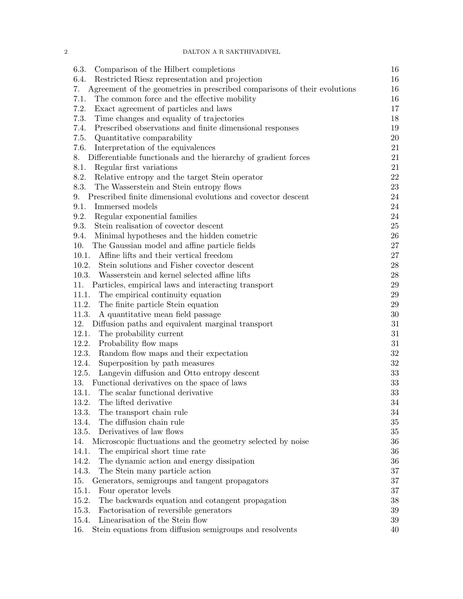
<figcaption class="paper-figure-caption"><b>Fig 1.</b> Low-resolution page preview, page 2</figcaption>
</figure>
<figure class="paper-figure-card">
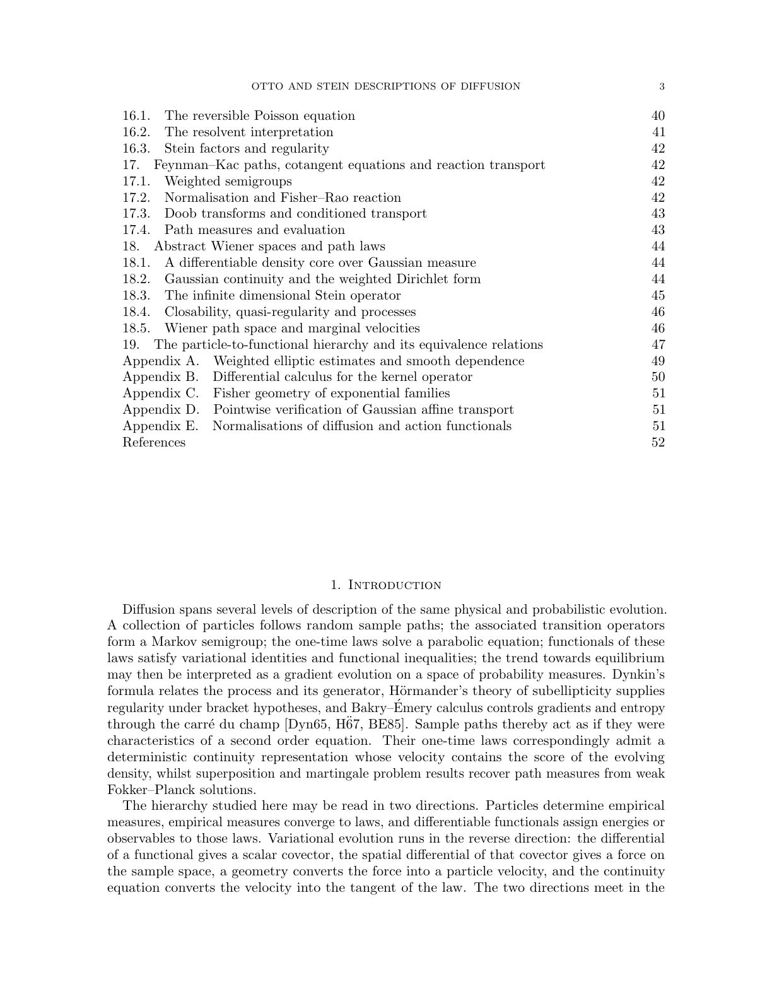
<figcaption class="paper-figure-caption"><b>Fig 2.</b> Low-resolution page preview, page 3</figcaption>
</figure>
<figure class="paper-figure-card">
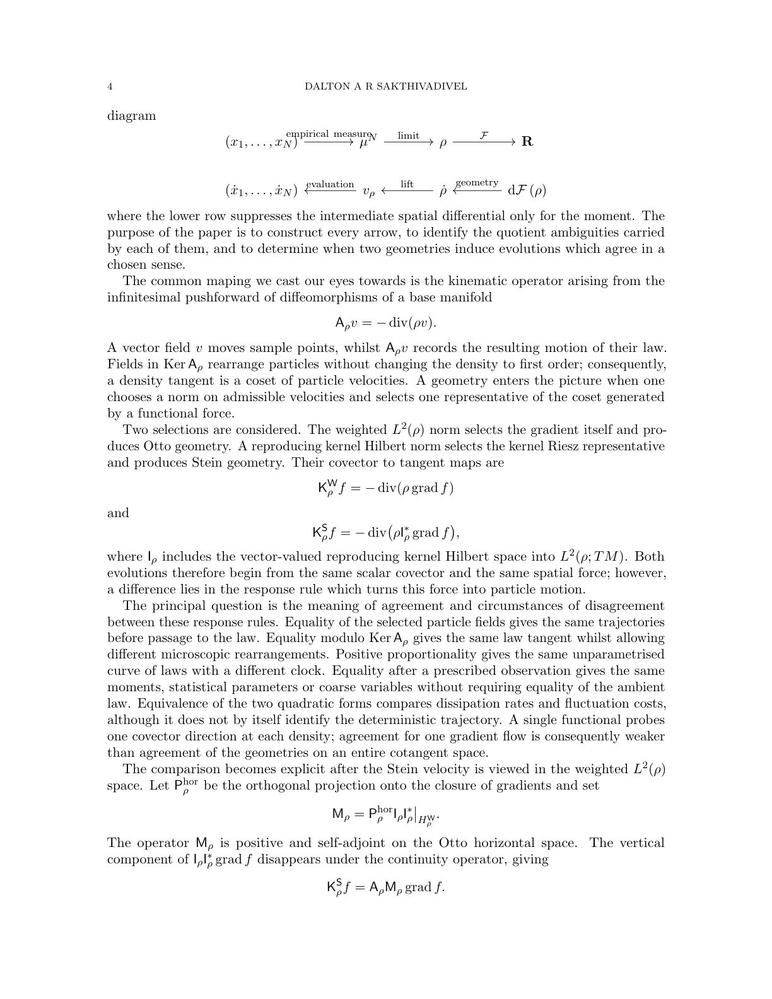
<figcaption class="paper-figure-caption"><b>Fig 3.</b> Low-resolution page preview, page 4</figcaption>
</figure>
<figure class="paper-figure-card">
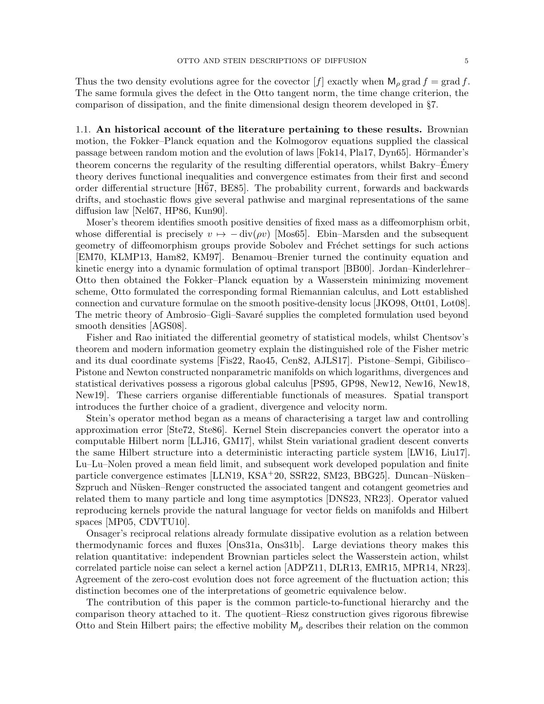
<figcaption class="paper-figure-caption"><b>Fig 4.</b> Low-resolution page preview, page 5</figcaption>
</figure>
<figure class="paper-figure-card">
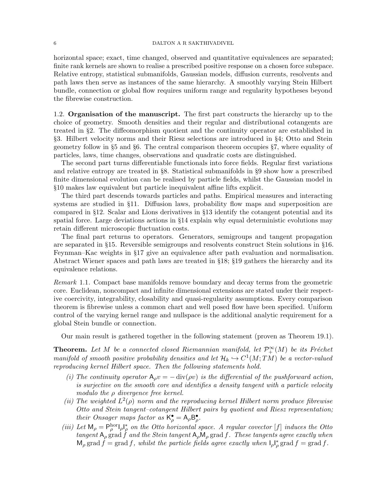
<figcaption class="paper-figure-caption"><b>Fig 5.</b> Low-resolution page preview, page 6</figcaption>
</figure>
</div>

<p><strong>Summary.</strong> This paper develops a rigorous mathematical framework comparing two distinct geometric descriptions—Otto and Stein—for how particle random walks transition into macroscopic diffusion equations on a manifold. It achieves this by treating the space of probability densities as an infinite-dimensional manifold, showing that agreement between these physical descriptions requires satisfying specific differential geometric identities.</p>
<p><strong>Why it may be interesting.</strong> While highly abstract, understanding how geometric structures derived from physical processes (like diffusion) relate to underlying microscopic dynamics is fundamental. The comparison between established variational/geometric frameworks (Otto vs. Stein) provides a powerful mathematical tool for analyzing non-equilibrium statistical mechanics models.</p>
<details>
<summary>Detailed structure</summary>
<p><strong>Main problem.</strong> The central problem is rigorously characterizing the mathematical passage from microscopic descriptions of particle random processes to macroscopic continuum descriptions, such as parabolic partial differential equations, within Markov diffusion theory.</p>
<p><strong>Main result.</strong> The paper establishes that two distinct geometric frameworks—the Otto geometry and the Stein geometry—arise depending on the choice of norm for admissible velocities. Agreement between these two descriptions is governed by a specific condition involving the operator M_rho grad f = grad f.</p>
<p><strong>Method.</strong> The authors utilize advanced differential geometry, treating the space of smooth probability densities as a Fréchet manifold. They compare geometric structures (tangent/cotangent spaces) derived from different Hilbert completions and employ tools from optimal transport theory.</p>
<p><strong>Model / system.</strong> The model concerns diffusion processes on a closed Riemannian manifold, where particles move under gradient forces and their empirical measures approximate smooth probability densities ($
ho$). The analysis focuses on the continuity operator linking particle velocity to measure evolution.</p>
<p><strong>Key observables.</strong> Probability density $
ho$, particle velocity fields $v$, relative entropy, dissipation costs, and geometric structures like the Otto and Stein tangent spaces.</p>
<p><strong>Important parameters / regimes.</strong> The geometry of the underlying Riemannian manifold, the regularity/smoothness of the density ($\inf 
ho > 0$), and the choice of norm used for completion (e.g., weighted $L^2(
ho)$ vs. kernel norm).</p>
<p><strong>Assumptions / limitations.</strong> The analysis often requires assuming sufficient smoothness or boundedness away from zero for the probability density to ensure uniform ellipticity and well-defined geometric structures.</p>
<p><strong>Paper structure.</strong> The paper builds a hierarchy connecting particle dynamics (microscopic) through measure evolution (mesoscopic) to functional inequalities (macroscopic). It systematically compares the mathematical implications of different choices in this continuity operator, culminating in explicit equivalence conditions.</p>
</details>
<details>
<summary>Abstract</summary>
<p>In various disparate settings one studies how random processes give way to parabolic partial differential equations and in turn to functional inequalities involving gradients and variational calculus. Particles subject to gradient forces, the fields which move them, the empirical measures which they form, the smooth laws which those measures approximate, and differentiable functionals of these laws constitute a hierarchy of descriptions of diffusion. Intervening on this hierarchy is a choice of how a conintuity operator converts particle velocity to the evolution of measures. Here a central object is constructed mediating two different such descriptions. The space of smooth positive probability densities on a closed Riemannian manifold is treated as a Fréchet manifold whose full continuous cotangent space consists of nonconstant distributions and whose regular cotangent space consists of sufficiently regular nonconstant functions. Beginning from the operator on this space arising as the infinitesimal lift of diffeomorphisms of the base manifold, two different Hilbert completions of this space of densities account for a wide class of objects relevant, leading to a partial universalisation of the microscopic--mesoscopic--macroscopic hierarchy in Markov analysis.</p>
</details>
<p><sub><a href="#top">↑ back to top</a></sub></p>

<p><a id="paper-2607.27915"></a></p>
<h3 id="iterative-quantum-algorithms-for-the-minimum-vertex-cover-problem-based-on-continuous-time-quantum-walks"><a href="http://arxiv.org/abs/2607.27915v1">Iterative quantum algorithms for the minimum vertex cover problem based on continuous-time quantum walks</a></h3>
<p><strong>Authors:</strong> Ruben Pariente Bassa, Finley A. Quinton, Franz G. Fuchs, Pascal Halffmann<br>
<strong>Type:</strong> theory · <strong>Category:</strong> quantum information and computing · <strong>PDF:</strong> <a href="https://arxiv.org/pdf/2607.27915v1">https://arxiv.org/pdf/2607.27915v1</a><br>
<strong>Analysis basis:</strong> full PDF text, analyzed in chunks
<strong>Topic relevance:</strong> <code>quantum measurements</code> <strong>2/5</strong> · <code>methods for driven-dissipative</code> <strong>1/5</strong> · <code>non-equilibrium dynamics</code> <strong>1/5</strong></p>
<div class="figure-strip-hint">↔ Scroll figures horizontally</div>
<div class="paper-figures-scroll">
<figure class="paper-figure-card">
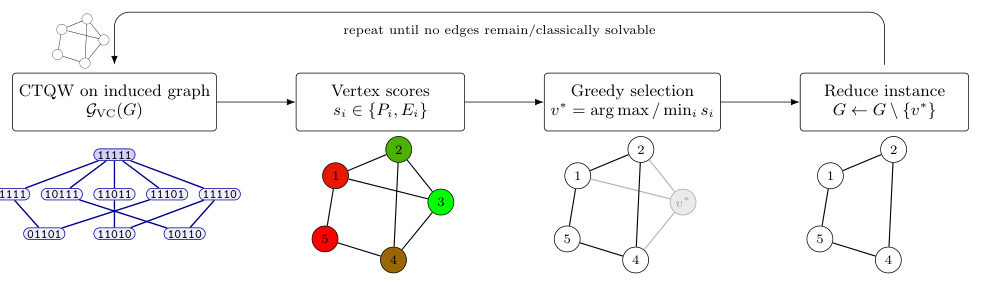
<figcaption class="paper-figure-caption"><b>Fig 1.</b> Figure 1: Schematic of the iterative quantum algorithm. The input graph G defines the induced feasible-state graph GVC(G), on which a constraint-preserving quantum walk prepares a state supported entirely on valid vertex covers. Observables and conditioned cost evaluations of the CTQW state produce per-vertex scores si ∈{Pi, Ei} on the original graph, where Pi is the marginal probability that vertex i belongs to the cover and Ei is the expected cover size obtained from a walk in which vertex i is fixed in the cover. This converts global information in the feasible configuration space into locally accessible greedy decision signals. A vertex is then fixed according to the chosen rule, the...</figcaption>
</figure>
<figure class="paper-figure-card">
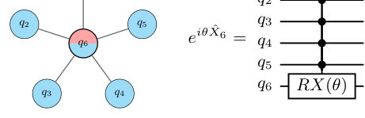
<figcaption class="paper-figure-caption"><b>Fig 2.</b> Figure 2: (a) Graph illustrating a vertex q6 (red) and its neighbourhood N(6) (blue). The neighbours may have additional edges among themselves or to other vertices not shown. (b) Circuit representation of the constraint preserving unitary U6(α) = eiα ˆ X6. A single-qubit rotation is applied to vertex 6, conditioned on all neighbouring qubits being in the state |1⟩, thereby restricting the dynamics to the vertex-cover subspace.</figcaption>
</figure>
<figure class="paper-figure-card">
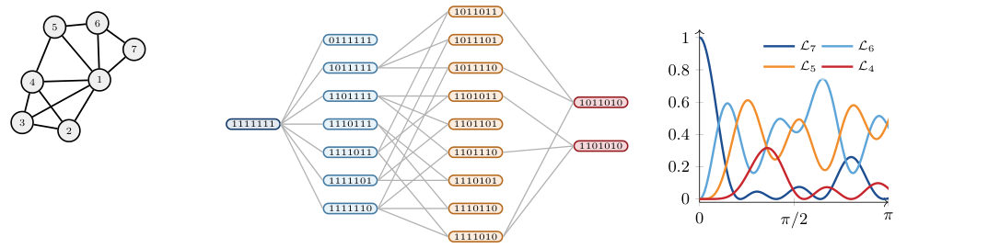
<figcaption class="paper-figure-caption"><b>Fig 3.</b> Figure 3: Example of the implicitly induced feasible-state graph underlying the constrained continuous-time quantum walk (CTQW). The input graph G = (V, E) in the left panel defines the feasible-state graph GVC(G) in the middle panel, whose vertices are the feasible vertex covers of G ordered by Hamming weight and whose edges connect pairs of covers that differ by a single feasibility-preserving bit flip. The walk is initialised in the all-ones state |Ω⟩= |1⟩⊗|V | and propagates coherently down through layers of decreasing weight. The right panel shows the layer-resolved probabilities Pk(t) = P</figcaption>
</figure>
<figure class="paper-figure-card">
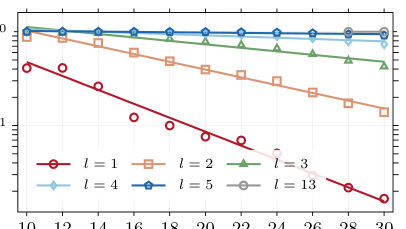
<figcaption class="paper-figure-caption"><b>Fig 4.</b> Figure 5: Cumulative bottom-ℓpeak probability P ⋆ ≤ℓ(n) ≡maxt P j≤ℓPD(G)−j(t) as a function of n at fixed offset ℓfrom the minimum-cover layer. Markers show numerical data; lines show exponential fits Aℓe−αℓn. For ℓ≥5, the fitted decay rate αℓis statistically indistinguishable from zero over the simulated range. Error bars show the corresponding standard deviation.</figcaption>
</figure>
<figure class="paper-figure-card">
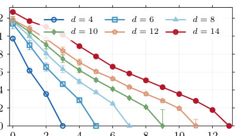
<figcaption class="paper-figure-caption"><b>Fig 5.</b> Figure 4: First-peak time t∗ ℓas a function of layer index ℓ, measured from the minimum-cover layer, for several depths D(G) of GVC(G). Markers show the mean over instances; error bars indicate the corresponding standard deviation.</figcaption>
</figure>
</div>

<p><strong>Summary.</strong> This paper introduces a novel hybrid quantum-classical framework to solve the Minimum Vertex Cover problem using continuous-time quantum walks. The CTQW evolves within the subspace of feasible vertex covers, generating quantum metrics that guide a greedy reduction process. The results show these quantum-informed methods outperform classical heuristics on random graph ensembles.</p>
<p><strong>Why it may be interesting.</strong> It provides a concrete, resource-aware application of constrained quantum dynamics (CTQW) for combinatorial optimization, which is highly relevant to developing practical quantum algorithms beyond simple Hamiltonian simulation.</p>
<details>
<summary>Detailed structure</summary>
<p><strong>Main problem.</strong> The paper addresses the NP-complete Minimum Vertex Cover (MVC) problem by developing a quantum algorithm framework.</p>
<p><strong>Main result.</strong> Quantum-informed greedy algorithms utilizing continuous-time quantum walks achieve lower mean approximation ratios and solve more instances optimally than classical greedy baselines on random graphs.</p>
<p><strong>Method.</strong> A hybrid quantum-classical approach uses CTQWs evolving within the feasible subspace of MVC, guiding a recursive greedy reduction based on quantum state observables.</p>
<p><strong>Model / system.</strong> The system is modeled by a continuous-time quantum walk (CTQW) operating on a graph derived from the feasible state space of vertex covers. The dynamics are constrained using projected Pauli operators to maintain feasibility within the Hilbert space.</p>
<p><strong>Key observables.</strong> Marginal cover probabilities ($P_i$) and expected cover sizes ($E_i$), used as quantum-derived scores for greedy selection.</p>
<p><strong>Important parameters / regimes.</strong> Walk time ($t$), Trotterization step size ($p$), graph structure (e.g., bounded degree, random families).</p>
<p><strong>Assumptions / limitations.</strong> The framework assumes the induced feasible-state graph is connected and that local observables derived from the CTQW can effectively guide a greedy search.</p>
<p><strong>Figures summary.</strong> Figures illustrate the iterative process linking the input graph to the state space graph via CTQW, and show entropy scaling related to quantum walk dynamics.</p>
<p><strong>Paper structure.</strong> The paper first establishes the theoretical framework for constraining CTQWs to the feasible subspace. It then details the hybrid greedy algorithm using quantum observables (QPG/QEG) and analyzes its performance against classical methods on various graph families.</p>
</details>
<details>
<summary>Abstract</summary>
<p>We introduce a constraint-preserving hybrid quantum-classical greedy framework for the minimum vertex cover problem, which extends directly to maximum independent set by bitwise complementation. The framework uses projected Pauli-X terms whose sum preserves the feasible subspace and acts within it exactly as the adjacency matrix of a layered graph of feasible covers. This graph is connected, so every feasible cover is linked to the configuration containing all vertices by a sequence of allowed single-vertex flips. Starting from this configuration, the corresponding continuous-time quantum walk propagates amplitude into layers containing progressively smaller covers. We rank vertices using either their marginal cover probabilities or the expected cover size obtained after fixing each candidate vertex in the cover, and use these rankings to guide recursive greedy reductions. Across several random-graph families, with walk times fixed using independent calibration ensembles, the quantum-informed algorithms achieve lower mean approximation ratios and solve a larger fraction of instances optimally than their corresponding classical greedy baselines. The conditioned-energy strategy performs best on the tested instances and retains algorithmic performance close to the exact continuous-time limit under low-depth Trotterisation. For bounded-degree graphs, each Trotter layer has circuit depth independent of system size, and the framework requires neither penalty terms nor variational training.</p>
</details>
<p><sub><a href="#top">↑ back to top</a></sub></p>

<p><a id="paper-2607.27930"></a></p>
<h3 id="design-of-a-quantum-error-correction-decoder-exploiting-temporal-parallelism"><a href="http://arxiv.org/abs/2607.27930v1">Design of a Quantum Error Correction Decoder Exploiting Temporal Parallelism</a></h3>
<p><strong>Authors:</strong> Leo Itoh, Takuya Kasamura, Hidetsugu Irie, Junichiro Kadomoto<br>
<strong>Type:</strong> both · <strong>Category:</strong> quantum information and computing · <strong>PDF:</strong> <a href="https://arxiv.org/pdf/2607.27930v1">https://arxiv.org/pdf/2607.27930v1</a><br>
<strong>Analysis basis:</strong> full PDF text, analyzed in chunks
<strong>Topic relevance:</strong> <code>QC/QI experiment</code> <strong>2/5</strong> · <code>quantum measurements</code> <strong>1/5</strong></p>
<div class="figure-strip-hint">↔ Scroll figures horizontally</div>
<div class="paper-figures-scroll">
<figure class="paper-figure-card">

<figcaption class="paper-figure-caption"><b>Fig 1.</b> Fig. 2. Three-dimensional spatiotemporal decoding graph. Edges along the time axis (solid lines) correspond to measurement errors, while edges along spatial directions (dashed lines) correspond to data qubit errors.</figcaption>
</figure>
<figure class="paper-figure-card">

<figcaption class="paper-figure-caption"><b>Fig 2.</b> Fig. 1. Rotated surface code (distance d = 5). Data qubits (black) store logical information. Syndrome qubits (red=Z-checks, blue=X-checks) detect adjacent data qubit errors. When an error occurs (lightning), it flips the syndrome of neighboring measurement qubits, enabling error location inference through decoding.</figcaption>
</figure>
<figure class="paper-figure-card">

<figcaption class="paper-figure-caption"><b>Fig 3.</b> Fig. 3. Example of cluster growth. The observed syndromes grow by one half-edge at a time, and clusters that come into contact are merged.</figcaption>
</figure>
<figure class="paper-figure-card">

<figcaption class="paper-figure-caption"><b>Fig 4.</b> Fig. 4. Comparison of (A) batch decoding and (B) sandwich decoding on the same syndrome data. Black dots denote detection events, red lines denote estimated error chains, and open circles denote virtual boundary nodes. In batch decoding, d rounds of syndrome measurements are decoded all at once. In sandwich decoding, windows of s + 2b rounds are decoded in parallel (Step 1). An error chain may terminate on a window’s time boundary, and such chains are reconciled across the seams (blue lines) between the core regions (shaded) of adjacent windows by the Type-2 decoder (Step 2).</figcaption>
</figure>
<figure class="paper-figure-card">

<figcaption class="paper-figure-caption"><b>Fig 5.</b> Fig. 5. Difference in decode timing between sandwich decoding and batch decoding. In sandwich decoding, decoding can proceed while syndrome measurements are still being collected (Store).</figcaption>
</figure>
</div>

<p><strong>Summary.</strong> This paper designs a novel microarchitecture to accelerate Quantum Error Correction (QEC) decoding using temporal parallelism via 'sandwich decoding.' By implementing this method with Union-Find on an ASIC, the authors demonstrate a substantial reduction in decoding latency compared to traditional batch methods. This work is crucial for advancing practical fault-tolerant quantum computing hardware.</p>
<p><strong>Why it may be interesting.</strong> This research directly addresses the engineering bottleneck in realizing fault-tolerant quantum computers by providing a concrete, high-speed hardware architecture for error correction decoding.</p>
<details>
<summary>Detailed structure</summary>
<p><strong>Main problem.</strong> The primary challenge is achieving low-latency Quantum Error Correction (QEC) decoding necessary for fault-tolerant quantum computation to prevent rapid error accumulation during syndrome measurement.</p>
<p><strong>Main result.</strong> The proposed microarchitecture using sandwich decoding achieves a significant average latency reduction of 35% compared to conventional batch decoders at $d=21$, while maintaining comparable logical error thresholds.</p>
<p><strong>Method.</strong> The authors propose exploiting temporal parallelism by implementing 'sandwich decoding' combined with the Union-Find algorithm, realized in an ASIC microarchitecture for high speed.</p>
<p><strong>Model / system.</strong> The work models QEC using surface codes where errors are detected via syndrome measurements on qubits. Decoding involves finding error chains on a three-dimensional spatiotemporal graph, which is approximated by the Union-Find method.</p>
<p><strong>Key observables.</strong> Average and worst-case decoding latency, logical error threshold ($\approx 1.5\%$), and circuit area scaling.</p>
<p><strong>Important parameters / regimes.</strong> Code distance ($d=21$ used for key results), physical error rate ($p$), window size ($w$), and buffer sizes ($s, b$).</p>
<p><strong>Assumptions / limitations.</strong> The core assumption is that decomposing the decoding problem into non-overlapping temporal windows (sandwiching) allows parallel processing while maintaining correctness via boundary reconciliation.</p>
<p><strong>Figures summary.</strong> Figures illustrate the structure of surface codes, the 3D spatiotemporal graph for decoding, and critically compare the timing/architecture flow between batch decoding and the proposed sandwich decoding scheme.</p>
<p><strong>Paper structure.</strong> The paper introduces the need for low-latency QEC, details the limitations of batch processing, proposes the sandwich decoding method with specialized hardware units (Dispatcher, Pairer), presents the ASIC implementation results comparing latency and area scaling against prior art, and concludes with future work directions.</p>
</details>
<details>
<summary>Abstract</summary>
<p>In the pursuit of fault-tolerant quantum computing, low-latency quantum error correction (QEC) is essential to prevent rapid error accumulation within the syndrome measurement cycle. In this work, we propose a microarchitecture that implements the sandwich decoding method using the Union-Find algorithm by exploiting temporal parallelism, and we present an ASIC implementation. Through logic synthesis and simulation, we show that the proposed decoder achieves an average latency reduction of 35% at code distance d = 21 compared with a conventional batch Union-Find decoder, while maintaining a comparable logical error threshold of approximately 1.5% under phenomenological noise.</p>
</details>
<p><sub><a href="#top">↑ back to top</a></sub></p>

<p><a id="paper-2607.28561"></a></p>
<h3 id="statistically-secure-uncloneable-encryption-of-arbitrary-messages"><a href="http://arxiv.org/abs/2607.28561v1">Statistically secure uncloneable encryption of arbitrary messages</a></h3>
<p><strong>Authors:</strong> Archishna Bhattacharyya, Anne Broadbent, Eric Culf<br>
<strong>Type:</strong> theory · <strong>Category:</strong> quantum information and computing · <strong>PDF:</strong> <a href="https://arxiv.org/pdf/2607.28561v1">https://arxiv.org/pdf/2607.28561v1</a><br>
<strong>Analysis basis:</strong> full PDF text, analyzed in chunks
<strong>Topic relevance:</strong> <code>entanglement &amp; information structure</code> <strong>2/5</strong> · <code>quantum measurements</code> <strong>1/5</strong></p>
<div class="figure-strip-hint">↔ Scroll figures horizontally</div>
<div class="paper-figures-scroll">
<figure class="paper-figure-card">

<figcaption class="paper-figure-caption"><b>Fig 1.</b> Low-resolution page preview, page 2</figcaption>
</figure>
<figure class="paper-figure-card">

<figcaption class="paper-figure-caption"><b>Fig 2.</b> Low-resolution page preview, page 3</figcaption>
</figure>
<figure class="paper-figure-card">

<figcaption class="paper-figure-caption"><b>Fig 3.</b> Low-resolution page preview, page 4</figcaption>
</figure>
<figure class="paper-figure-card">

<figcaption class="paper-figure-caption"><b>Fig 4.</b> Low-resolution page preview, page 5</figcaption>
</figure>
<figure class="paper-figure-card">

<figcaption class="paper-figure-caption"><b>Fig 5.</b> Low-resolution page preview, page 6</figcaption>
</figure>
</div>

<p><strong>Summary.</strong> This paper proves that uncloneable encryption schemes can be extended from single bits to messages of arbitrary length while maintaining statistical security. By leveraging the structure of Clifford unitaries, the authors establish unconditional security for these multi-message protocols. This advances the theoretical understanding of information security in quantum communication.</p>
<p><strong>Why it may be interesting.</strong> While focused on quantum cryptography, the rigorous mathematical techniques involving group theory and bounding expectation values are highly relevant to understanding information processing limits in open quantum systems.</p>
<details>
<summary>Detailed structure</summary>
<p><strong>Main problem.</strong> To establish that one-time uncloneable encryption of messages of arbitrary length maintains statistical security (unconditional security).</p>
<p><strong>Main result.</strong> The authors successfully upgrade the single-bit scheme to achieve unconditional uncloneable encryption for arbitrarily long messages, with polynomial encoding time.</p>
<p><strong>Method.</strong> They extend known secure single-bit schemes by exploiting structural properties of Clifford unitaries and relating cloning bounds across different message lengths using group theory arguments.</p>
<p><strong>Model / system.</strong> The work analyzes Quantum Encryption Schemes (QECM) based on the Clifford group unitaries ($C_n$), focusing on security against cloning and distinguishing attacks.</p>
<p><strong>Key observables.</strong> Cloning Value ($c(Q)$) and Cloning-Distinguishing Value ($    ext{cd}(Q)$).</p>
<p><strong>Important parameters / regimes.</strong> Message length ($m$) and security parameter ($\lambda$).</p>
<p><strong>Assumptions / limitations.</strong> The extension relies on the structural properties of the Clifford group and prior results concerning unconditional security for single bits.</p>
<p><strong>Paper structure.</strong> The paper builds upon established single-bit uncloneable encryption, then develops methods using observable overlap in Measurement-of-Evidence (MoE) games to prove bounds on $    ext{cd}(Q)$ for arbitrary message lengths.</p>
</details>
<details>
<summary>Abstract</summary>
<p>Unconditional uncloneable encryption of a single bit with efficient encryption and decryption is now possible. However, whether the extension to messages of arbitrary length achieves statistical security remains to be known. Using the fact that the encoding bases for the single-bit scheme known to be secure consist of a subset of the Clifford unitaries, we show that this scheme can be upgraded to achieve unconditional uncloneable encryption for messages of arbitrary length, with encoding time polynomial in the message length and security parameter. This establishes that one-time uncloneable encryption of arbitrary messages enjoys statistical security.</p>
</details>
<p><sub><a href="#top">↑ back to top</a></sub></p>

<p><a id="paper-2607.28358"></a></p>
<h3 id="no-go-theorems-for-quantum-transport-metrics-from-fixed-cost-operators"><a href="http://arxiv.org/abs/2607.28358v1">No-Go Theorems for Quantum Transport Metrics from Fixed Cost Operators</a></h3>
<p><strong>Authors:</strong> Minbo Gao, Zhengfeng Ji, Tianshi Yu<br>
<strong>Type:</strong> theory · <strong>Category:</strong> other · <strong>PDF:</strong> <a href="https://arxiv.org/pdf/2607.28358v1">https://arxiv.org/pdf/2607.28358v1</a><br>
<strong>Analysis basis:</strong> full PDF text, analyzed in chunks
<strong>Topic relevance:</strong> <code>entanglement &amp; information structure</code> <strong>2/5</strong></p>
<div class="figure-strip-hint">↔ Scroll figures horizontally</div>
<div class="paper-figures-scroll">
<figure class="paper-figure-card">

<figcaption class="paper-figure-caption"><b>Fig 1.</b> Low-resolution page preview, page 2</figcaption>
</figure>
<figure class="paper-figure-card">

<figcaption class="paper-figure-caption"><b>Fig 2.</b> Low-resolution page preview, page 3</figcaption>
</figure>
<figure class="paper-figure-card">

<figcaption class="paper-figure-caption"><b>Fig 3.</b> Low-resolution page preview, page 4</figcaption>
</figure>
<figure class="paper-figure-card">

<figcaption class="paper-figure-caption"><b>Fig 4.</b> Low-resolution page preview, page 5</figcaption>
</figure>
<figure class="paper-figure-card">

<figcaption class="paper-figure-caption"><b>Fig 5.</b> Low-resolution page preview, page 6</figcaption>
</figure>
</div>

<p><strong>Summary.</strong> This paper investigates the mathematical feasibility of representing quantum transport distances using fixed cost operators. It proves that such formulations fail to yield true metrics—specifically violating the triangle inequality or forcing the cost operator to zero—for dimensions $d \geq 3$. These no-go theorems highlight fundamental constraints on defining metric structures in the full space of quantum states.</p>
<p><strong>Why it may be interesting.</strong> This work establishes fundamental theoretical limitations on how quantum information measures (like distance) can be formulated using simple fixed-cost operators, which is crucial for developing robust metrics in quantum computation and physics.</p>
<details>
<summary>Detailed structure</summary>
<p><strong>Main problem.</strong> The central problem is determining if quantum optimal transport metrics, derived from fixed cost operators on the full quantum state space, can satisfy fundamental metric properties like the triangle inequality.</p>
<p><strong>Main result.</strong> The authors prove no-go theorems showing that for dimensions $d \geq 3$, neither the standard nor the channel-induced fixed-cost coupling formulation yields a true metric because the triangle inequality is violated or the cost operator must vanish entirely.</p>
<p><strong>Method.</strong> The proof involves constructing explicit counterexamples, particularly using qutrit states, to violate the triangle inequality for the optimal transport cost. For channel couplings, they analyze necessary conditions (nonnegativity and zero self-cost) that force the cost operator to be zero.</p>
<p><strong>Model / system.</strong> The analysis is performed on quantum states $
ho, \sigma$ residing in a finite-dimensional Hilbert space $H$, utilizing coupling-based quantum optimal transport formulations. Specific models include standard couplings ($\Gamma$) and channel-induced couplings ($\mathfrak{e}\Gamma$).</p>
<p><strong>Key observables.</strong> Optimal cost ($T_C$), the square root of the optimal cost ($W_C$), and the violation of the triangle inequality.</p>
<p><strong>Important parameters / regimes.</strong> The dimension $d$ (thresholds at $d \geq 2$ or $d \geq 3$) is a critical parameter determining the failure of metricity.</p>
<p><strong>Assumptions / limitations.</strong> The analysis assumes the cost structure is defined by a fixed Hermitian operator $C$, and it tests these structures against the full mixed-state space.</p>
<p><strong>Paper structure.</strong> The paper first addresses standard couplings, proving failure of metricity for $d \geq 3$ via counterexamples. It then analyzes stabilized costs. Finally, it tackles channel-induced couplings, deriving necessary conditions that force the cost operator to zero for $d \geq 2$.</p>
</details>
<details>
<summary>Abstract</summary>
<p>Coupling-based quantum optimal transport generalizes classical optimal transport by representing transport plans as bipartite states with prescribed marginals and evaluating their cost as the expectation of a fixed Hermitian operator. Friedland et al. [Phys. Rev. Lett. 129, 110402 (2022)] conjectured that the square root of the optimal cost associated with the SWAP projector is a metric in every dimension and that this property persists for nearby quantum cost matrices. Miller [arXiv:2607.07764] disproved both conjectures by constructing explicit diagonal qutrit counterexamples. Building on his analysis, we prove a uniform no-go theorem for standard couplings. In every dimension $d\geq3$, no fixed cost operator makes either the optimal cost or its square root a metric, with violations occurring already among commuting states. The obstruction persists under stabilization of the SWAP cost. For channel-induced couplings, global nonnegativity and vanishing self-cost force the cost operator to be zero, precluding point separation when $d\geq2$. Taken together, these no-go results show that fixed-cost coupling formulations do not lead to metrics on the full quantum state space.</p>
</details>
<p><sub><a href="#top">↑ back to top</a></sub></p>

<p><a id="paper-2607.28202"></a></p>
<h3 id="purifications-for-convex-cones"><a href="http://arxiv.org/abs/2607.28202v1">Purifications for Convex Cones</a></h3>
<p><strong>Authors:</strong> Felix Campidell, Tim Netzer<br>
<strong>Type:</strong> theory · <strong>Category:</strong> quantum information and computing · <strong>PDF:</strong> <a href="https://arxiv.org/pdf/2607.28202v1">https://arxiv.org/pdf/2607.28202v1</a><br>
<strong>Analysis basis:</strong> full PDF text, analyzed in chunks
<strong>Topic relevance:</strong> <code>entanglement &amp; information structure</code> <strong>2/5</strong></p>
<div class="figure-strip-hint">↔ Scroll figures horizontally</div>
<div class="paper-figures-scroll">
<figure class="paper-figure-card">

<figcaption class="paper-figure-caption"><b>Fig 1.</b> Low-resolution page preview, page 2</figcaption>
</figure>
<figure class="paper-figure-card">

<figcaption class="paper-figure-caption"><b>Fig 2.</b> Low-resolution page preview, page 3</figcaption>
</figure>
<figure class="paper-figure-card">

<figcaption class="paper-figure-caption"><b>Fig 3.</b> Low-resolution page preview, page 4</figcaption>
</figure>
<figure class="paper-figure-card">

<figcaption class="paper-figure-caption"><b>Fig 4.</b> Low-resolution page preview, page 5</figcaption>
</figure>
<figure class="paper-figure-card">

<figcaption class="paper-figure-caption"><b>Fig 5.</b> Low-resolution page preview, page 6</figcaption>
</figure>
</div>

<p><strong>Summary.</strong> This paper develops a geometric framework using convex cones to study the purification principle, which is fundamental to quantum theory. It proves existence theorems for purifications under conditions like cone indecomposability and provides criteria for when these purifications are unique. The results have direct implications for understanding state representations in quantum information theory.</p>
<p><strong>Why it may be interesting.</strong> This work provides deep mathematical tools (convex geometry applied to tensor products) that underpin the rigorous understanding of quantum correlations and state representations in generalized probabilistic theories.</p>
<details>
<summary>Detailed structure</summary>
<p><strong>Main problem.</strong> The paper studies the mathematical concept of 'purification' for elements within finite-dimensional proper convex cones, motivated by its importance in quantum theory.</p>
<p><strong>Main result.</strong> It establishes existence theorems for purifications when the underlying cone is indecomposable and contains the maximally entangled state, while also providing criteria for uniqueness based on local automorphisms.</p>
<p><strong>Method.</strong> The analysis heavily relies on convex geometry, specifically analyzing the structure of extreme points (extreme rays) within tensor products of cones representing quantum states or positive maps.</p>
<p><strong>Model / system.</strong> The models involve general proper convex cones $C$ describing physical states, such as positive semidefinite matrices ($    ext{psd}$), Lorentz cones ($ ext{L}_n$), and the PPT cone. The core mathematical structure is the tensor product of these state spaces.</p>
<p><strong>Key observables.</strong> Purification elements $\omega$, which are extreme points in intermediate tensor cones $P \subseteq C^\vee \overline{\otimes} C$.</p>
<p><strong>Important parameters / regimes.</strong> The indecomposability and homogeneity of the cone $C$ are crucial structural assumptions for the main existence theorems.</p>
<p><strong>Assumptions / limitations.</strong> The theory assumes working within finite-dimensional real vector spaces, and key results often require the state cone $C$ to be indecomposable.</p>
<p><strong>Figures summary.</strong> Not specified in the notes; the discussion references specific examples (e.g., Example 4.1 for $   ext{psd}$, Example 4.2 for Lorentz cones) illustrating existence and non-uniqueness.</p>
<p><strong>Paper structure.</strong> The paper builds from defining purification geometrically using convex cones, proving general existence theorems based on indecomposability, analyzing boundary behavior related to simplicial faces, and concluding with uniqueness criteria derived from local automorphisms.</p>
</details>
<details>
<summary>Abstract</summary>
<p>Motivated by the importance of the purification principle in quantum theory and generalized probabilistic theories, we study purifications using only the geometry of a finite-dimensional proper convex cone. We prove an existence theorem for indecomposable cones and intermediate tensor cones containing the maximally entangled state; in particular, every interior point of an indecomposable homogeneous cone admits a purification. This applies to Lorentz cones, for example. We also give a criterion for uniqueness up to local automorphisms. On the boundary, we show that if every proper face of $C$ is simplicial, then only pure points can admit purifications, and we demonstrate that this conclusion fails in the presence of non-simplicial faces. Examples involving positive semidefinite cones, Lorentz cones, $k$-positive maps, PPT tensors, and polyhedral cones illustrate both existence and non-uniqueness phenomena.</p>
</details>
<p><sub><a href="#top">↑ back to top</a></sub></p>

<p><a id="paper-2607.28426"></a></p>
<h3 id="improved-convergence-of-carleman-embedded-quantum-algorithm-for-the-vlasov-poisson-system"><a href="http://arxiv.org/abs/2607.28426v1">Improved Convergence of Carleman-Embedded Quantum Algorithm for the Vlasov-Poisson System</a></h3>
<p><strong>Authors:</strong> Matthew Christensen, Tom Goffrey, Animesh Datta<br>
<strong>Type:</strong> theory · <strong>Category:</strong> quantum information and computing · <strong>PDF:</strong> <a href="https://arxiv.org/pdf/2607.28426v1">https://arxiv.org/pdf/2607.28426v1</a><br>
<strong>Analysis basis:</strong> full PDF text, analyzed in chunks
<strong>Topic relevance:</strong> <code>Keldysh / 2PI / non-Gaussian methods</code> <strong>1/5</strong> · <code>analog quantum simulation</code> <strong>1/5</strong> · <code>correlated / nonlocal dissipation</code> <strong>1/5</strong> · <code>driven-dissipative phase transition</code> <strong>1/5</strong> · <code>methods for driven-dissipative</code> <strong>1/5</strong> · <code>non-equilibrium dynamics</code> <strong>1/5</strong></p>
<div class="figure-strip-hint">↔ Scroll figures horizontally</div>
<div class="paper-figures-scroll">
<figure class="paper-figure-card">

<figcaption class="paper-figure-caption"><b>Fig 1.</b> FIG. 1. Numerically obtained lower bounds of collision frequency (blue &amp; yellow), the fixed P = I bounds (grey, dashed) and physical upper limit ν = 1 (red, dashed) for a perturbation strength α = 0.01. (a) Two stream instability initial condition fts with fixed Nv = 2. (b) Two stream instability initial condition with fixed Nx = 2. (c) Perturbed Maxwellian initial condition fpert with fixed Nv = 2. (d) Perturbed Maxwellian initial condition with fixed Nx = 2. Analytical expressions for the grey dashed lines are given at the end of Appendix F. Appendix E shows the results of the same minimization for the unshifted Vlasov-Poisson system of Eqs. (1) &amp; (2).</figcaption>
</figure>
<figure class="paper-figure-card">

<figcaption class="paper-figure-caption"><b>Fig 2.</b> FIG. 2. Numerically obtained lower bounds of collision frequency in the unshifted regime (blue &amp; yellow), the fixed P = I bounds (grey) and physical upper limit ν &lt; 1 (red). (a) Two stream instability initial condition with fixed Nv = 2. (b) Two stream instability initial condition with fixed Nx = 2. (c) Perturbed Maxwellian initial condition with fixed Nv = 2. (d) Perturbed Maxwellian initial condition with fixed Nx = 2.</figcaption>
</figure>
</div>

<p><strong>Summary.</strong> The paper analyzes the convergence limits of quantum algorithms applied to solve the Vlasov-Poisson equation from kinetic theory. By employing Carleman embedding and Fourier-Hermite expansions, the authors derive new lower bounds on the necessary collision frequency for stable simulation. This advances both the theoretical understanding of plasma dynamics and the practical feasibility of simulating such systems using quantum computation.</p>
<p><strong>Why it may be interesting.</strong> This work bridges advanced quantum simulation techniques (Carleman embedding) with fundamental plasma physics problems. For AMO/open systems, it provides a rigorous framework for analyzing the stability and computational feasibility of simulating complex, dissipative, nonlinear dynamics using quantum resources.</p>
<details>
<summary>Detailed structure</summary>
<p><strong>Main problem.</strong> The primary goal is extending the convergence regime of quantum algorithms designed to solve the Vlasov-Poisson equations from kinetic plasma physics.</p>
<p><strong>Main result.</strong> Convergence is established for physically reasonable collision frequencies, improving upon previous requirements for unphysically large dissipation. The quantum algorithm shows a potential speedup over classical methods for time-averaged outputs.</p>
<p><strong>Method.</strong> The authors employ Carleman embedding to transform the infinite-dimensional Vlasov-Poisson system into a finite-dimensional linear system suitable for quantum simulation analysis, using Fourier-Hermite expansions.</p>
<p><strong>Model / system.</strong> The model is the Vlasov-Poisson system, specifically analyzed in its collisional form incorporating a BGK collision operator. The dynamics are discretized via a Fourier-Hermite expansion of the shifted phase-space distribution function.</p>
<p><strong>Key observables.</strong> Convergence criteria derived from Lyapunov stability analysis ($   ext{Re} \left( rac{|\mathbf{F}_2|^P}{\mu_P(\mathbf{F}_1)} - 1 
ight) &lt; 0$), and the required lower bound on collision frequency ($
u_P$).</p>
<p><strong>Important parameters / regimes.</strong> Collision frequency ($
u$), velocity resolution ($N_v$), time-averaged vs. time-resolved output requirement, and the matrix structure defined by $F_1$ (linear/dissipation) and $F_2$ (nonlinear).</p>
<p><strong>Assumptions / limitations.</strong> The analysis relies on using a Fourier-Hermite expansion for the distribution function and making assumptions about the form of the Lyapunov functions ($P$). A key limitation is that convergence might require increasing collision frequency strength with velocity resolution.</p>
<p><strong>Figures summary.</strong> Figure 1 compares numerically obtained lower bounds ($
u_P$) for required collision frequencies for two canonical problems (two-stream instability, Landau damping) against fixed $P=I$ bounds and the physical limit $
u=1$. Figure 2 shows similar bounds in an unshifted regime.</p>
<p><strong>Paper structure.</strong> The paper first establishes the mathematical framework by expanding the Vlasov-Poisson system into ODEs for coefficients. It then applies Carleman embedding to form linear/nonlinear matrices ($F_1, F_2$). The core analysis involves minimizing Lyapunov function bounds over various parameters to determine the minimum required collision frequency ($
u_P$) for convergence.</p>
</details>
<details>
<summary>Abstract</summary>
<p>We extend the regime of convergence of Carleman-embedded quantum algorithms that solve the Vlasov-Poisson equations from kinetic plasma physics. We establish convergence, using both analytical and numerical lower bounds, for physically reasonable collision frequencies using a Fourier-Hermite expansion of the shifted phase-space distribution function. We also show that for a large class of basis functions, the convergence of the Carleman-embedded Vlasov-Poisson system requires increasing collision frequency strength with velocity resolution. The complexity of the quantum algorithm depends strongly on whether we seek time-averaged or -resolved outputs.</p>
</details>
<p><sub><a href="#top">↑ back to top</a></sub></p>

<p><a id="paper-2607.27449"></a></p>
<h3 id="bosonic-quantum-communication-beyond-the-thermal-threshold"><a href="http://arxiv.org/abs/2607.27449v1">Bosonic quantum communication beyond the thermal threshold</a></h3>
<p><strong>Authors:</strong> Francesco Anna Mele, Giuseppe Catalano, Marco Fanizza, Vittorio Giovannetti, Ludovico Lami<br>
<strong>Type:</strong> theory · <strong>Category:</strong> quantum information and computing · <strong>PDF:</strong> <a href="https://arxiv.org/pdf/2607.27449v1">https://arxiv.org/pdf/2607.27449v1</a><br>
<strong>Analysis basis:</strong> full PDF text, analyzed in chunks
<strong>Topic relevance:</strong> <code>Keldysh / 2PI / non-Gaussian methods</code> <strong>1/5</strong> · <code>correlated / nonlocal dissipation</code> <strong>1/5</strong> · <code>driven-dissipative phase transition</code> <strong>1/5</strong> · <code>entanglement &amp; information structure</code> <strong>1/5</strong> · <code>methods for driven-dissipative</code> <strong>1/5</strong></p>
<div class="figure-strip-hint">↔ Scroll figures horizontally</div>
<div class="paper-figures-scroll">
<figure class="paper-figure-card">

<figcaption class="paper-figure-caption"><b>Fig 1.</b> FIG. 1. Lower bounds on the quantum capacity of the thermal attenuator Φ𝜂,𝜈for 𝜈= 1 and the non-Gaussian advantage of single-mode ansätze. In both panels, the darker shaded region is the antidegradable region 𝜂≤𝜂AD(1) = 0.75, where the quantum capacity vanishes. (a) Overview on a logarithmic scale. The dotted vertical line is the exact antidegradability threshold, and the dashed vertical line marks the thermal threshold 𝜂G(1) = 0.8. The black curve is the thermal-state lower bound in Eq. (7). The diamond is the certified witness from Theorem 1; the square is the independently certified point in Eq. (22); the open circle is the stable, but uncertified, numerical point at 𝜂= 0.7818. (b) Lower...</figcaption>
</figure>
<figure class="paper-figure-card">

<figcaption class="paper-figure-caption"><b>Fig 2.</b> FIG. 2. Parameter region (𝜂, 𝜈) where the quantum capacity is known to be positive. The blue region is the new region where 𝑄&gt; 0, beyond what was previously known. Specifically, the blue dot marks the certified point (𝜂0, 𝜈0) = (0.7841, 1), where, using a non-Gaussian input state, we prove that𝑄(Φ𝜂0,𝜈0) &gt; 0; see Eq. (22). The blue shaded region contains the channels Φ𝜂,𝜈from which the certified channel can be obtained by pre- and post-processing, Φ𝜂0,𝜈0 = G2 ◦Φ𝜂,𝜈◦G1 [22]. Data processing therefore gives 𝑄(Φ𝜂,𝜈) ≥𝑄(Φ𝜂0,𝜈0) &gt; 0. Only the portion of this region not already covered by the thermal-state lower bound is shaded. The dashed curve is the thermal threshold 𝜂= 𝜂G(𝜈): for 𝜂&gt; 𝜂G(𝜈), the...</figcaption>
</figure>
</div>

<p><strong>Summary.</strong> The paper investigates the ultimate rate limit (quantum capacity) for transmitting quantum information through a lossy, noisy bosonic channel called the thermal attenuator. It rigorously proves that non-Gaussian input states can achieve higher transmission rates than those predicted by standard Gaussian state assumptions. This finding expands our understanding of achievable communication in high-noise quantum optical systems.</p>
<p><strong>Why it may be interesting.</strong> This work directly impacts quantum communication theory by showing that assuming Gaussian inputs (a common simplification) leads to an incorrect assessment of channel capacity in noisy bosonic environments.</p>
<details>
<summary>Detailed structure</summary>
<p><strong>Main problem.</strong> The primary goal is determining the exact quantum capacity of bosonic channels, specifically the thermal attenuator, by investigating whether non-Gaussian input states can surpass the established lower bound derived from Gaussian (thermal) inputs.</p>
<p><strong>Main result.</strong> The authors prove that non-Gaussian states can achieve a positive coherent information in parameter regimes where the standard thermal-state lower bound vanishes, thus identifying new high-noise communication regimes.</p>
<p><strong>Method.</strong> The work combines rigorous mathematical proofs using entropy calculations and interval arithmetic with constructing explicit non-Gaussian input states to certify lower bounds on the coherent information.</p>
<p><strong>Model / system.</strong> The system modeled is the bosonic thermal attenuator ($\Phi_{\eta,
u}$), which describes photon loss in a noisy environment characterized by transmissivity $\eta$ and environmental mean photon number $
u$.</p>
<p><strong>Key observables.</strong> Quantum Capacity ($Q$), Coherent Information ($I_c$), Thermal Threshold ($\eta_G(
u)$), and Antidegradability Threshold ($\eta_{AD}(
u)$).</p>
<p><strong>Important parameters / regimes.</strong> Transmissivity ($\eta$) and environmental photon number ($
u$). Specific certified points include $(\eta, 
u) = (0.7841, 1)$.</p>
<p><strong>Assumptions / limitations.</strong> The analysis relies on the ability to rigorously certify lower bounds using techniques like interval arithmetic, moving beyond purely numerical optimization.</p>
<p><strong>Figures summary.</strong> Figure 1 compares quantum capacity lower bounds across different noise regimes ($\eta$ vs $
u$), showing the non-Gaussian witness exceeding the thermal bound. Figure 2 maps out a 'high-ground region' in the $(\eta, 
u)$ plane where $Q>0$ is certified.</p>
<p><strong>Paper structure.</strong> The paper first establishes that Gaussian optimization reduces to thermal state optimization for $I_c$. It then constructs and analyzes specific non-Gaussian states ($
ho_\star$) to demonstrate a separation from this bound. Finally, it maps out the parameter space where positive capacity can be rigorously certified.</p>
</details>
<details>
<summary>Abstract</summary>
<p>The quantum capacity of the bosonic thermal attenuator, which is given by the regularization of its coherent information, is unknown. The seminal work of Holevo and Werner established in 1999 the standard one-use lower bound obtained from input thermal states. We first prove that this long-standing lower bound is the exact supremum over all single-mode Gaussian states and then show that, crucially, a non-Gaussian state can do better. As a consequence, we prove positivity of the quantum capacity in a parameter region where the channel is not antidegradable, yet its coherent information optimized over single-mode Gaussian states vanishes. For example, with one thermal photon in the environment and at transmissivity $η=0.8$, the coherent information is non-positive for every single-mode Gaussian input. We give an explicit rank-two non-Gaussian state, supported on only six Fock levels, whose coherent information is certified to be at least $4.7\times10^{-4}$ qubits per channel use. This short witness is far from numerically optimal: a numerical optimization over fixed non-Gaussian families reaches at least $8.4\times 10^{-3}$ qubits per channel use at the same point. More generally, at $ν=1$, using non-Gaussian inputs we certify positivity of the coherent information, and therefore of the quantum capacity, down to $η=0.7841$; by contrast, the channel is antidegradable, and hence has zero quantum capacity, for $η\leq0.75$. Overall, our work identifies new high-noise regimes in which bosonic quantum communication is possible.</p>
</details>
<p><sub><a href="#top">↑ back to top</a></sub></p>

<p><a id="paper-2607.27342"></a></p>
<h3 id="restrictions-on-non-clifford-fault-tolerance-and-ruling-out-beyond-sql-quantum-metrology"><a href="http://arxiv.org/abs/2607.27342v1">Restrictions on non-Clifford fault tolerance and ruling out beyond-SQL quantum metrology</a></h3>
<p><strong>Authors:</strong> Constantin Cedillo Vayson de Pradenne, Ishaan Kannan, Harald Putterman, Jordan Cotler<br>
<strong>Type:</strong> theory · <strong>Category:</strong> quantum information and computing · <strong>PDF:</strong> <a href="https://arxiv.org/pdf/2607.27342v1">https://arxiv.org/pdf/2607.27342v1</a><br>
<strong>Analysis basis:</strong> full PDF text, analyzed in chunks
<strong>Topic relevance:</strong> <code>Keldysh / 2PI / non-Gaussian methods</code> <strong>1/5</strong> · <code>correlated / nonlocal dissipation</code> <strong>1/5</strong> · <code>driven-dissipative phase transition</code> <strong>1/5</strong> · <code>entanglement &amp; information structure</code> <strong>1/5</strong> · <code>methods for driven-dissipative</code> <strong>1/5</strong></p>
<div class="figure-strip-hint">↔ Scroll figures horizontally</div>
<div class="paper-figures-scroll">
<figure class="paper-figure-card">

<figcaption class="paper-figure-caption"><b>Fig 1.</b> FIG. 1. Obstructions to transversal quantum sensing. (a) Heisenberg-limited transversal sensing. A spatially homogeneous signal acts on an array of n aligned quantum sensors initialized in a code state, which evolves for a time of order 1/(nϵ). Near selected interrogation times, QEC removes local errors aligned with the signal generator while preserving the coherent global rotation as a discrete transversal logical gate; measuring the encoded state would then determine ω to precision ϵ. (b) Fault-tolerance obstructions. Any code family supporting transversal sensing in time O(1/(nαϵ)) for any α &gt; 1/2 must contain stabilizer checks of poly(n)-growing weight, and many single-qubit errors can...</figcaption>
</figure>
</div>

<p><strong>Summary.</strong> This paper rigorously proves severe limitations on achieving super-classical sensitivity in quantum metrology. It shows that for signal noise correlated with the measurement signal, any attempt to surpass the Standard Quantum Limit requires an exponentially growing resource (check weight) incompatible with fault-tolerant encoding. The work establishes a general no-go theorem ruling out such advantages under realistic noise conditions.</p>
<p><strong>Why it may be interesting.</strong> This work provides fundamental theoretical constraints on quantum sensing, showing that realistic noise models severely limit the achievable precision scaling, even when using sophisticated error correction techniques.</p>
<details>
<summary>Detailed structure</summary>
<p><strong>Main problem.</strong> The paper investigates fundamental restrictions on implementing non-Clifford gates fault-tolerantly and proves a general no-go theorem ruling out asymptotic quantum metrological advantages beyond the Standard Quantum Limit (SQL) when signal noise is aligned.</p>
<p><strong>Main result.</strong> It establishes that achieving beyond-SQL sensing requires stabilizer checks whose weight diverges with system size, and more broadly, constant-strength signal-aligned noise prevents any asymptotic speedup over the SQL in AC or DC sensing.</p>
<p><strong>Method.</strong> The authors use rigorous mathematical proofs based on properties of stabilizer codes, analyzing code susceptibility ($\Xi_G$), Bures distance bounds derived from quantum channels, and comparing required error correction weights against achievable scaling laws.</p>
<p><strong>Model / system.</strong> The model involves encoding quantum sensors in Quantum Error-Correcting Codes (QECCs) to measure a physical signal Hamiltonian ($H$). The analysis considers protocols under realistic noise models, including dephasing ($\gamma$) and erasure channels ($p_e$), particularly when the signal coupling is aligned with the noise generators.</p>
<p><strong>Key observables.</strong> Bures distance between output states ($d_B(
ho_{	ext{out}}^{\omega_0}, 
ho_{	ext{out}}^{\omega_1})$), required stabilizer check weights ($\lambda_S$), and codespace signal susceptibility ($\Xi_G$).</p>
<p><strong>Important parameters / regimes.</strong> Code distance ($d\ge 3$), logical gate level ($D$), noise strengths ($\gamma, p_e$), and the scaling exponent $\alpha$ governing the desired metrological advantage.</p>
<p><strong>Assumptions / limitations.</strong> The strongest results rely on the assumption that signal-aligned noise (noise sharing Pauli generators with the signal) is present. The analysis also considers various advanced techniques like biased estimators or nonstabilizer encodings in the final theorem.</p>
<p><strong>Figures summary.</strong> Figures illustrate Heisenberg-limited sensing and fault-tolerance obstructions, showing that high speedup requires checks of polynomially growing weight, which conflicts with local noise assumptions.</p>
<p><strong>Paper structure.</strong> The paper progresses by first deriving quantitative restrictions on transversal non-Clifford gates (Theorem 1), then analyzing the limitations imposed on concatenated codes (Theorem 2), applying these to single-qubit rotations (Theorem 3), and culminating in a general no-go theorem for metrology under signal-aligned noise (Theorem 5).</p>
</details>
<details>
<summary>Abstract</summary>
<p>Quantum metrology promises a quadratic speedup over the standard quantum limit (SQL), but signal-aligned noise is expected to preclude this advantage in realistic settings. A potential route around known no-go results is to encode the sensors in a quantum code where the physical signal acts transversally as a logical gate. Understanding restrictions on transversal non-Clifford gates is therefore central to both quantum metrology and fault-tolerant quantum computation. Here, we prove such restrictions and apply them to transversal sensing. For any stabilizer code of distance $d\ge 3$ supporting a transversal logical action in level $D$ of the Clifford hierarchy, every stabilizer generating set must contain a check of weight at least $2^D$. Moreover, any $r$-level concatenated realization satisfies $r\leq \lfloor \log_2 n/D\rfloor$, forcing $r=1$ and ruling out concatenation when applied to beyond-SQL metrology. We then show that transversal single-qubit rotations by a small angle $θ$ can only induce a nontrivial logical action on an $n$-qubit code if its checks include irreducible stabilizers of weight $Ω(1/(n|θ|^2))$. Here, many single-qubit errors commute with every stabilizer or logical Pauli below this weight and are only detected by a high-weight check, so their syndromes cannot be fault-tolerantly reconstructed from low-weight normalizer measurements. Since beyond-SQL transversal sensing requires $|θ| = o(n^{-1/2})$, the weight of checks required for syndrome extraction diverges with $n$. Finally, we prove a broader metrological no-go theorem that avoids the assumptions of the quantum Cramér-Rao bound: constant-strength signal-aligned noise rules out any asymptotic advantage over the SQL in AC or DC sensing, even with biased estimators, nonstabilizer or approximate encodings, quantum memory, intermediate measurements, or adaptive control.</p>
</details>
<p><sub><a href="#top">↑ back to top</a></sub></p>

<p><a id="paper-2607.27641"></a></p>
<h3 id="third-order-nonlinear-transport-in-a-percolative-two-dimensional-superconductor"><a href="http://arxiv.org/abs/2607.27641v1">Third-order nonlinear transport in a percolative two-dimensional superconductor</a></h3>
<p><strong>Authors:</strong> Wenjun Liu, Chenghe Wang, Xiubin Li, Kenji Watanabe, Takashi Taniguchi, Tao Zhang, Xiao-Xiao Zhang, Jing Li<br>
<strong>Type:</strong> both · <strong>Category:</strong> strongly correlated electrons · <strong>PDF:</strong> <a href="https://arxiv.org/pdf/2607.27641v1">https://arxiv.org/pdf/2607.27641v1</a><br>
<strong>Analysis basis:</strong> full PDF text, analyzed in chunks
<strong>Topic relevance:</strong> <code>Keldysh / 2PI / non-Gaussian methods</code> <strong>1/5</strong> · <code>correlated / nonlocal dissipation</code> <strong>1/5</strong> · <code>driven-dissipative phase transition</code> <strong>1/5</strong> · <code>methods for driven-dissipative</code> <strong>1/5</strong> · <code>non-equilibrium dynamics</code> <strong>1/5</strong></p>
<div class="figure-strip-hint">↔ Scroll figures horizontally</div>
<div class="paper-figures-scroll">
<figure class="paper-figure-card">

<figcaption class="paper-figure-caption"><b>Fig 1.</b> FIG. 1. Setup of experiments. (a) Device schematic. (b) Superconducting transition in MoTe2 showing the resistance normalized to its value at 4 K. Inset: Optical image of device A, with the dashed red line outlining the MoTe2 sheet. The scale bar represents 10 µm. (c-d) First- and third-harmonic longitudinal voltage (V∥) and transverse voltage (V⊥) as a function of the longitudinal excitation current (I).</figcaption>
</figure>
<figure class="paper-figure-card">

<figcaption class="paper-figure-caption"><b>Fig 2.</b> FIG. 2. Temperature dependence of third-order nonlinear transport properties. (a) V 3ω ∥ versus I at different temper- atures. (b) V 3ω ∥ as a function of I3 at different temperatures, showing a linear dependence. (c) V 3ω ∥ /I3 as a function of I at different temperature. The blue shaded boxes mark the regimes where α remains relatively large. The width of each box extends from the lowest presented current up to I = I∗, and the height spans the full range of fluctuating α values within that regime. (d) Third-order nonlinear transport co- efficients α∗and subcritical current scale I∗as functions of temperature. (e) Cartoon illustrating the evolution of super- conducting fluctuations varies...</figcaption>
</figure>
<figure class="paper-figure-card">

<figcaption class="paper-figure-caption"><b>Fig 3.</b> FIG. 3. Magnetic field effects on superconductivity and third-order nonlinear transport properties. (a) Temperature- dependent resistance under varied applied perpendicular mag- netic fields. (b) Subcritical transition temperature (black symbols), normalized to its zero-field value, as a function of perpendicular magnetic field. The red dashed line represents a fit to the 2D Ginzburg-Landau model, while the blue dashed line indicates the Pauli limit. (c) Magnetic field dependence of the third-order longitudinal voltage V 3ω ∥ for varied I at 250 mK. (d) V 3ω ∥ versus I for different magnetic fields. (e) Estimated third-order transport coefficient α∗as a function of magnetic field in the...</figcaption>
</figure>
</div>

<p><strong>Summary.</strong> This work reports observing third-order nonlinear electrical transport in a percolative superconductor ($  ext{MoTe}_2$), demonstrating that this nonlinearity is highly sensitive to the superconducting state. By correlating the measured cubic voltage response with theoretical predictions from Ginzburg-Landau theory, the authors establish higher-order transport as a powerful diagnostic tool for studying superconducting fluctuations in low-dimensional materials.</p>
<p><strong>Why it may be interesting.</strong> The strong correlation between higher-order non-linear response and superconducting fluctuations provides an experimental handle to study pairing mechanisms and coherence in strongly correlated 2D materials without relying solely on transport measurements near zero resistance.</p>
<details>
<summary>Detailed structure</summary>
<p><strong>Main problem.</strong> The study investigates third-order nonlinear transport as a sensitive probe for superconducting transitions occurring in percolative two-dimensional superconductors.</p>
<p><strong>Main result.</strong> A clear cubic dependence of the third-harmonic voltage on current was observed, and this nonlinearity was found to be strongly correlated with the superconducting state, vanishing near the transition temperature.</p>
<p><strong>Method.</strong> The research combines low-frequency lock-in measurements of nonlinear voltages ($V_{3\omega}$) with theoretical modeling based on time-dependent Ginzburg-Landau theory.</p>
<p><strong>Model / system.</strong> The physical system is a trilayer $1T'$-MoTe$_2$ superconductor operating in its percolative transition regime. The analysis utilizes superconducting fluctuation models derived from the Ginzburg-Landau framework to explain the observed nonlinear response.</p>
<p><strong>Key observables.</strong> Third-harmonic longitudinal voltage ($V_{3\omega\parallel}$), third-order transport coefficient ($\alpha^*$), and subcritical current scale ($I^*$).</p>
<p><strong>Important parameters / regimes.</strong> Superconducting transition temperature ($T_c \approx 1.4$ K), excitation current ($I$), perpendicular magnetic field ($B_{\perp}$), and back gate voltage ($V_{BG}$).</p>
<p><strong>Assumptions / limitations.</strong> The nonlinear response is assumed to originate from fluctuating Cooper pairs, which is semi-quantitatively captured by the time-dependent Ginzburg-Landau theory.</p>
<p><strong>Figures summary.</strong> Figures demonstrate the cubic dependence of $V_{3\omega\parallel}$ on current at various temperatures and gate voltages. They also map out how $\alpha^*$ and $I^*$ change systematically with temperature, magnetic field, and doping (gate voltage).</p>
<p><strong>Paper structure.</strong> The paper establishes the experimental setup and measures nonlinear transport across different regimes (T, B, V_BG). It then correlates the measured third-order coefficients ($\alpha^*$) with superconducting fluctuations predicted by GL theory, confirming its utility as a sensitive probe.</p>
</details>
<details>
<summary>Abstract</summary>
<p>Percolative superconductivity frequently arises in two-dimensional van der Waals materials due to reduced dimensionality, enhanced quantum fluctuations, and complex electron-phonon interactions, providing a unique platform where normal electrons coexist with Cooper pairs. We report the observation of substantial third-order nonlinear transport in a trilayer $1T^\prime$-MoTe$_2$ superconductor within its percolative transition regime. The third-harmonic longitudinal voltage ($V_{\|}^{3ω}$) exhibits a clear cubic dependence on excitation current below a threshold, with both its magnitude and nonlinear coefficient strongly correlated with the superconducting state. This nonlinear response is semiquantitatively captured by the superconducting fluctuation within the time-dependent Ginzburg-Landau theory, where nonlinear transport arises due to fluctuating Cooper pairs. Our results demonstrate that third-order nonlinear transport serves as a sensitive probe of superconducting transitions in percolative systems and establish a foundation for exploring higher-order transport phenomena in strongly correlated systems.</p>
</details>
<p><sub><a href="#top">↑ back to top</a></sub></p>
<hr>
<p>
<a href="index.html">← Index</a>
 · <a href="papers_04.html">← Previous</a> · <a href="papers_06.html">Next →</a>
</p>
<hr>

</body>
</html>
